Ἐὰν εὐθεῖα γραμμὴ ἄκρον καὶ μέσον λόγον τμηθῇ, τὸ μεῖζον τμῆμα προσλαβὸν τὴν ἡμίσειαν τῆς ὅλης πενταπλάσιον δύναται τοῦ ἀπὸ τῆς ἡμισείας τετραγώνου.
Εὐθεῖα γὰρ γραμμὴ ἡ ΑΒ ἄκρον καὶ μέσον λόγον τετμήσθω κατὰ τὸ Γ σημεῖον, καὶ ἔστω μεῖζον τμῆμα τὸ ΑΓ, καὶ ἐκβεβλήσθω ἐπ' εὐθείας τῇ ΓΑ εὐθεῖα ἡ ΑΔ, καὶ κείσθω τῆς ΑΒ ἡμίσεια ἡ ΑΔ· λέγω, ὅτι πενταπλάσιόν ἐστι τὸ ἀπὸ τῆς ΓΔ τοῦ ἀπὸ τῆς ΔΑ.
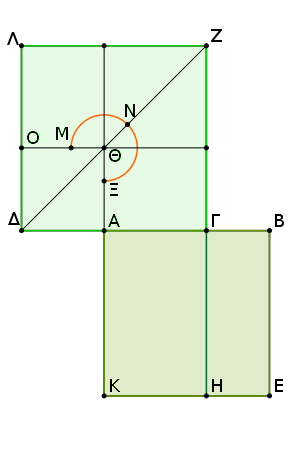
Ἀναγεγράφθωσαν γὰρ ἀπὸ τῶν ΑΒ, ΔΓ τετράγωνα τὰ ΑΕ, ΔΖ, καὶ καταγεγράφθω ἐν τῷ ΔΖ τὸ σχῆμα, καὶ διήχθω ἡ ΖΓ ἐπὶ τὸ Η. καὶ ἐπεὶ ἡ ΑΒ ἄκρον καὶ μέσον λόγον τέτμηται κατὰ τὸ Γ, τὸ ἄρα ὑπὸ τῶν ΑΒΓ ἴσον ἐστὶ τῷ ἀπὸ τῆς ΑΓ. καί ἐστι τὸ μὲν ὑπὸ τῶν ΑΒΓ τὸ ΓΕ, τὸ δὲ ἀπὸ τῆς ΑΓ τὸ ΖΘ· ἴσον ἄρα τὸ ΓΕ τῷ ΖΘ.
καὶ ἐπεὶ διπλῆ ἐστιν ἡ ΒΑ τῆς ΑΔ, ἴση δὲ ἡ μὲν ΒΑ τῇ ΚΑ, ἡ δὲ ΑΔ τῇ ΑΘ, διπλῆ ἄρα καὶ ἡ ΚΑ τῆς ΑΘ. ὡς δὲ ἡ ΚΑ πρὸς τὴν ΑΘ, οὕτως τὸ ΓΚ πρὸς τὸ ΓΘ· διπλάσιον ἄρα τὸ ΓΚ τοῦ ΓΘ. εἰσὶ δὲ καὶ τὰ ΛΘ, ΘΓ διπλάσια τοῦ ΓΘ. ἴσον ἄρα τὸ ΚΓ τοῖς ΛΘ, ΘΓ. ἐδείχθη δὲ καὶ τὸ ΓΕ τῷ ΘΖ ἴσον· ὅλον ἄρα τὸ ΑΕ τετράγωνον ἴσον ἐστὶ τῷ ΜΝΞ γνώμονι.
καὶ ἐπεὶ διπλῆ ἐστιν ἡ ΒΑ τῆς ΑΔ, τετραπλάσιόν ἐστι τὸ ἀπὸ τῆς ΒΑ τοῦ ἀπὸ τῆς ΑΔ, τουτέστι τὸ ΑΕ τοῦ ΔΘ. ἴσον δὲ τὸ ΑΕ τῷ ΜΝΞ γνώμονι· καὶ ὁ ΜΝΞ ἄρα γνώμων τετραπλάσιός ἐστι τοῦ ΑΟ· ὅλον ἄρα τὸ ΔΖ πενταπλάσιόν ἐστι τοῦ ΑΟ. καί ἐστι τὸ μὲν ΔΖ τὸ ἀπὸ τῆς ΔΓ, τὸ δὲ ΑΟ τὸ ἀπὸ τῆς ΔΑ· τὸ ἄρα ἀπὸ τῆς ΓΔ πενταπλάσιόν ἐστι τοῦ ἀπὸ τῆς ΔΑ.
Ἐὰν ἄρα εὐθεῖα ἄκρον καὶ μέσον λόγον τμηθῇ, τὸ μεῖζον τμῆμα προσλαβὸν τὴν ἡμίσειαν τῆς ὅλης πενταπλάσιον δύναται τοῦ ἀπὸ τῆς ἡμισείας τετραγώνου· ὅπερ ἔδει δεῖξαι.
Ἐὰν εὐθεῖα γραμμὴ τμήματος ἑαυτῆς πενταπλάσιον δύνηται, τῆς διπλασίας τοῦ εἰρημένου τμήματος ἄκρον καὶ μέσον λόγον τεμνομένης τὸ μεῖζον τμῆμα τὸ λοιπὸν μέρος ἐστὶ τῆς ἐξ ἀρχῆς εὐθείας.
Εὐθεῖα γὰρ γραμμὴ ἡ ΑΒ τμήματος ἑαυτῆς τοῦ ΑΓ πενταπλάσιον δυνάσθω, τῆς δὲ ΑΓ διπλῆ ἔστω ἡ ΓΔ· λέγω, ὅτι τῆς ΓΔ ἄκρον καὶ μέσον λόγον τεμνομένης τὸ μεῖζον τμῆμά ἐστιν ἡ ΓΒ.
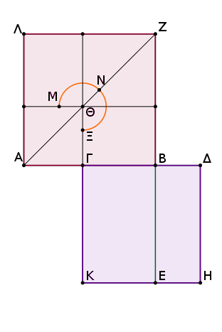
Ἀναγεγράφθω γὰρ ἀφ' ἑκατέρας τῶν ΑΒ, ΓΔ τετράγωνα τὰ ΑΖ, ΓΗ, καὶ καταγεγράφθω ἐν τῷ ΑΖ τὸ σχῆμα, καὶ διήχθω ἡ ΒΕ.
καὶ ἐπεὶ πενταπλάσιόν ἐστι τὸ ἀπὸ τῆς ΒΑ τοῦ ἀπὸ τῆς ΑΓ, πενταπλάσιόν ἐστι τὸ ΑΖ τοῦ ΑΘ. τετραπλάσιος ἄρα ὁ ΜΝΞ γνώμων τοῦ ΑΘ. καὶ ἐπεὶ διπλῆ ἐστιν ἡ ΔΓ τῆς ΓΑ, τετραπλάσιον ἄρα ἐστὶ τὸ ἀπὸ ΔΓ τοῦ ἀπὸ ΓΑ, τουτέστι τὸ ΓΗ τοῦ ΑΘ.
ἐδείχθη δὲ καὶ ὁ ΜΝΞ γνώμων τετραπλάσιος τοῦ ΑΘ· ἴσος ἄρα ὁ ΜΝΞ γνώμων τῷ ΓΗ. καὶ ἐπεὶ διπλῆ ἐστιν ἡ ΔΓ τῆς ΓΑ, ἴση δὲ ἡ μὲν ΔΓ τῇ ΓΚ, ἡ δὲ ΑΓ τῇ ΓΘ [διπλῆ ἄρα καὶ ἡ ΚΓ τῆς ΓΘ], διπλάσιον ἄρα καὶ τὸ ΚΒ τοῦ ΒΘ.
εἰσὶ δὲ καὶ τὰ ΛΘ, ΘΒ τοῦ ΘΒ διπλάσια· ἴσον ἄρα τὸ ΚΒ τοῖς ΛΘ, ΘΒ. ἐδείχθη δὲ καὶ ὅλος ὁ ΜΝΞ γνώμων ὅλῳ τῷ ΓΗ ἴσος· καὶ λοιπὸν ἄρα τὸ ΘΖ τῷ ΒΗ ἐστιν ἴσον. καί ἐστι τὸ μὲν ΒΗ τὸ ὑπὸ τῶν ΓΔΒ· ἴση γὰρ ἡ ΓΔ τῇ ΔΗ· τὸ δὲ ΘΖ τὸ ἀπὸ τῆς ΓΒ· τὸ ἄρα ὑπὸ τῶν ΓΔΒ ἴσον ἐστὶ τῷ ἀπὸ τῆς ΓΒ.
ἔστιν ἄρα ὡς ἡ ΔΓ πρὸς τὴν ΓΒ, οὕτως ἡ ΓΒ πρὸς τὴν ΒΔ. μείζων δὲ ἡ ΔΓ τῆς ΓΒ· μείζων ἄρα καὶ ἡ ΓΒ τῆς ΒΔ. τῆς ΓΔ ἄρα εὐθείας ἄκρον καὶ μέσον λόγον τεμνομένης τὸ μεῖζον τμῆμά ἐστιν ἡ ΓΒ.
Ἐὰν ἄρα εὐθεῖα γραμμὴ τμήματος ἑαυτῆς πενταπλάσιον δύνηται, τῆς διπλασίας τοῦ εἰρημένου τμήματος ἄκρον καὶ μέσον λόγον τεμνομένης τὸ μεῖζον τμῆμα τὸ λοιπὸν μέρος ἐστὶ τῆς ἐξ ἀρχῆς εὐθείας· ὅπερ ἔδει δεῖξαι.
Λ ῆ μ μ α : Ὅτι δὲ ἡ διπλῆ τῆς ΑΓ μείζων ἐστὶ τῆς ΒΓ, οὕτως δεικτέον.
Εἰ γὰρ μή, ἔστω, εἰ δυνατόν, ἡ ΒΓ διπλῆ τῆς ΓΑ. τετραπλάσιον ἄρα τὸ ἀπὸ τῆς ΒΓ τοῦ ἀπὸ τῆς ΓΑ· πενταπλάσια ἄρα τὰ ἀπὸ τῶν ΒΓ, ΓΑ τοῦ ἀπὸ τῆς ΓΑ. ὑπόκειται δὲ καὶ τὸ ἀπὸ τῆς ΒΑ πενταπλάσιον τοῦ ἀπὸ τῆς ΓΑ· τὸ ἄρα ἀπὸ τῆς ΒΑ ἴσον ἐστὶ τοῖς ἀπὸ τῶν ΒΓ, ΓΑ· ὅπερ ἀδύνατον. οὐκ ἄρα ἡ ΓΒ διπλασία ἐστὶ τῆς ΑΓ. ὁμοίως δὴ δείξομεν, ὅτι οὐδὲ ἡ ἐλάττων τῆς ΓΒ διπλασίων ἐστὶ τῆς ΓΑ· πολλῷ γὰρ [μεῖζον] τὸ ἄτοπον.
Ἡ ἄρα τῆς ΑΓ διπλῆ μείζων ἐστὶ τῆς ΓΒ· ὅπερ ἔδει δεῖξαι.
Ἐὰν εὐθεῖα γραμμὴ ἄκρον καὶ μέσον λόγον τμηθῇ, τὸ ἔλασσον τμῆμα προσλαβὸν τὴν ἡμίσειαν τοῦ μείζονος τμήματος πενταπλάσιον δύναται τοῦ ἀπὸ τῆς ἡμισείας τοῦ μείζονος τμήματος τετραγώνου.
Εὐθεῖα γάρ τις ἡ ΑΒ ἄκρον καὶ μέσον λόγον τετμήσθω κατὰ τὸ Γ σημεῖον, καὶ ἔστω μεῖζον τμῆμα τὸ ΑΓ, καὶ τετμήσθω ἡ ΑΓ δίχα κατὰ τὸ Δ· λέγω, ὅτι πενταπλάσιόν ἐστι τὸ ἀπὸ τῆς ΒΔ τοῦ ἀπὸ τῆς ΔΓ.
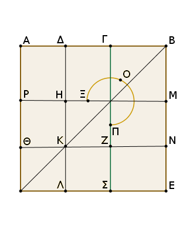
Ἀναγεγράφθω γὰρ ἀπὸ τῆς ΑΒ τετράγωνον τὸ ΑΕ, καὶ καταγεγράφθω διπλοῦν τὸ σχῆμα. ἐπεὶ διπλῆ ἐστιν ἡ ΑΓ τῆς ΔΓ, τετραπλάσιον ἄρα τὸ ἀπὸ τῆς ΑΓ τοῦ ἀπὸ τῆς ΔΓ, τουτέστι τὸ ΡΣ τοῦ ΖΗ. καὶ ἐπεὶ τὸ ὑπὸ τῶν ΑΒΓ ἴσον ἐστὶ τῷ ἀπὸ τῆς ΑΓ, καί ἐστι τὸ ὑπὸ τῶν ΑΒΓ τὸ ΓΕ, τὸ ἄρα ΓΕ ἴσον ἐστὶ τῷ ΡΣ. τετραπλάσιον δὲ τὸ ΡΣ τοῦ ΖΗ· τετραπλάσιον ἄρα καὶ τὸ ΓΕ τοῦ ΖΗ.
πάλιν ἐπεὶ ἴση ἐστὶν ἡ ΑΔ τῇ ΔΓ, ἴση ἐστὶ καὶ ἡ ΘΚ τῇ ΚΖ. ὥστε καὶ τὸ ΗΖ τετράγωνον ἴσον ἐστὶ τῷ ΘΛ τετραγώνῳ. ἴση ἄρα ἡ ΗΚ τῇ ΚΛ, τουτέστιν ἡ ΜΝ τῇ ΝΕ· ὥστε καὶ τὸ ΜΖ τῷ ΖΕ ἐστιν ἴσον. ἀλλὰ τὸ ΜΖ τῷ ΓΗ ἐστιν ἴσον· καὶ τὸ ΓΗ ἄρα τῷ ΖΕ ἐστιν ἴσον. κοινὸν προσκείσθω τὸ ΓΝ· ὁ ἄρα ΞΟΠ γνώμων ἴσος ἐστὶ τῷ ΓΕ.
ἀλλὰ τὸ ΓΕ τετραπλάσιον ἐδείχθη τοῦ ΗΖ· καὶ ὁ ΞΟΠ ἄρα γνώμων τετραπλάσιός ἐστι τοῦ ΖΗ τετραγώνου. ὁ ΞΟΠ ἄρα γνώμων καὶ τὸ ΖΗ τετράγωνον πενταπλάσιός ἐστι τοῦ ΖΗ. ἀλλὰ ὁ ΞΟΠ γνώμων καὶ τὸ ΖΗ τετράγωνόν ἐστι τὸ ΔΝ. καί ἐστι τὸ μὲν ΔΝ τὸ ἀπὸ τῆς ΔΒ, τὸ δὲ ΗΖ τὸ ἀπὸ τῆς ΔΓ. τὸ ἄρα ἀπὸ τῆς ΔΒ πενταπλάσιόν ἐστι τοῦ ἀπὸ τῆς ΔΓ· ὅπερ ἔδει δεῖξαι.
Ἐὰν εὐθεῖα γραμμὴ ἄκρον καὶ μέσον λόγον τμηθῇ, τὸ ἀπὸ τῆς ὅλης καὶ τοῦ ἐλάσσονος τμήματος, τὰ συναμφότερα τετράγωνα, τριπλάσιά ἐστι τοῦ ἀπὸ τοῦ μείζονος τμήματος τετραγώνου.
Ἔστω εὐθεῖα ἡ ΑΒ, καὶ τετμήσθω ἄκρον καὶ μέσον λόγον κατὰ τὸ Γ, καὶ ἔστω μεῖζον τμῆμα τὸ ΑΓ· λέγω, ὅτι τὰ ἀπὸ τῶν ΑΒ, ΒΓ τριπλάσιά ἐστι τοῦ ἀπὸ τῆς ΓΑ.
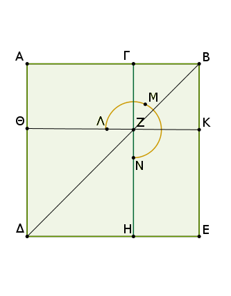
Ἀναγεγράφθω γὰρ ἀπὸ τῆς ΑΒ τετράγωνον τὸ ΑΔΕΒ, καὶ καταγεγράφθω τὸ σχῆμα. ἐπεὶ οὖν ἡ ΑΒ ἄκρον καὶ μέσον λόγον τέτμηται κατὰ τὸ Γ, καὶ τὸ μεῖζον τμῆμά ἐστιν ἡ ΑΓ, τὸ ἄρα ὑπὸ τῶν ΑΒΓ ἴσον ἐστὶ τῷ ἀπὸ τῆς ΑΓ.
καί ἐστι τὸ μὲν ὑπὸ τῶν ΑΒΓ τὸ ΑΚ, τὸ δὲ ἀπὸ τῆς ΑΓ τὸ ΘΗ· ἴσον ἄρα ἐστὶ τὸ ΑΚ τῷ ΘΗ. καὶ ἐπεὶ ἴσον ἐστὶ τὸ ΑΖ τῷ ΖΕ, κοινὸν προσκείσθω τὸ ΓΚ· ὅλον ἄρα τὸ ΑΚ ὅλῳ τῷ ΓΕ ἐστιν ἴσον· τὰ ἄρα ΑΚ, ΓΕ τοῦ ΑΚ ἐστι διπλάσια. ἀλλὰ τὰ ΑΚ, ΓΕ ὁ ΛΜΝ γνώμων ἐστὶ καὶ τὸ ΓΚ τετράγωνον· ὁ ἄρα ΛΜΝ γνώμων καὶ τὸ ΓΚ τετράγωνον διπλάσιά ἐστι τοῦ ΑΚ.
ἀλλὰ μὴν καὶ τὸ ΑΚ τῷ ΘΗ ἐδείχθη ἴσον· ὁ ἄρα ΛΜΝ γνώμων καὶ [τὸ ΓΚ τετράγωνον διπλάσιά ἐστι τοῦ ΘΗ· ὥστε ὁ ΛΜΝ γνώμων καὶ] τὰ ΓΚ, ΘΗ τετράγωνα τριπλάσιά ἐστι τοῦ ΘΗ τετραγώνου. καί ἐστιν ὁ [μὲν] ΛΜΝ γνώμων καὶ τὰ ΓΚ, ΘΗ τετράγωνα ὅλον τὸ ΑΕ καὶ τὸ ΓΚ, ἅπερ ἐστὶ τὰ ἀπὸ τῶν ΑΒ, ΒΓ τετράγωνα, τὸ δὲ ΗΘ τὸ ἀπὸ τῆς ΑΓ τετράγωνον.
τὰ ἄρα ἀπὸ τῶν ΑΒ, ΒΓ τετράγωνα τριπλάσιά ἐστι τοῦ ἀπὸ τῆς ΑΓ τετραγώνου· ὅπερ ἔδει δεῖξαι.
Ἐὰν εὐθεῖα γραμμὴ ἄκρον καὶ μέσον λόγον τμηθῇ, καὶ προστεθῇ αὐτῇ ἴση τῷ μείζονι τμήματι, ἡ ὅλη εὐθεῖα ἄκρον καὶ μέσον λόγον τέτμηται, καὶ τὸ μεῖζον τμῆμά ἐστιν ἡ ἐξ ἀρχῆς εὐθεῖα.
Εὐθεῖα γὰρ γραμμὴ ἡ ΑΒ ἄκρον καὶ μέσον λόγον τετμήσθω κατὰ τὸ Γ σημεῖον, καὶ ἔστω μεῖζον τμῆμα ἡ ΑΓ, καὶ τῇ ΑΓ ἴση [κείσθω] ἡ ΑΔ. λέγω, ὅτι ἡ ΔΒ εὐθεῖα ἄκρον καὶ μέσον λόγον τέτμηται κατὰ τὸ Α, καὶ τὸ μεῖζον τμῆμά ἐστιν ἡ ἐξ ἀρχῆς εὐθεῖα ἡ ΑΒ.
Ἀναγεγράφθω γὰρ ἀπὸ τῆς ΑΒ τετράγωνον τὸ ΑΕ, καὶ καταγεγράφθω τὸ σχῆμα. ἐπεὶ ἡ ΑΒ ἄκρον καὶ μέσον λόγον τέτμηται κατὰ τὸ Γ, τὸ ἄρα ὑπὸ ΑΒΓ ἴσον ἐστὶ τῷ ἀπὸ ΑΓ. καί ἐστι τὸ μὲν ὑπὸ ΑΒΓ τὸ ΓΕ, τὸ δὲ ἀπὸ τῆς ΑΓ τὸ ΓΘ· ἴσον ἄρα τὸ ΓΕ τῷ ΘΓ.
ἀλλὰ τῷ μὲν ΓΕ ἴσον ἐστὶ τὸ ΘΕ, τῷ δὲ ΘΓ ἴσον τὸ ΔΘ· καὶ τὸ ΔΘ ἄρα ἴσον ἐστὶ τῷ ΘΕ [κοινὸν προσκείσθω τὸ ΘΒ]. ὅλον ἄρα τὸ ΔΚ ὅλῳ τῷ ΑΕ ἐστιν ἴσον. καί ἐστι τὸ μὲν ΔΚ τὸ ὑπὸ τῶν ΒΔ, ΔΑ· ἴση γὰρ ἡ ΑΔ τῇ ΔΛ· τὸ δὲ ΑΕ τὸ ἀπὸ τῆς ΑΒ· τὸ ἄρα ὑπὸ τῶν ΒΔΑ ἴσον ἐστὶ τῷ ἀπὸ τῆς ΑΒ. ἔστιν ἄρα ὡς ἡ ΔΒ πρὸς τὴν ΒΑ, οὕτως ἡ ΒΑ πρὸς τὴν ΑΔ. μείζων δὲ ἡ ΔΒ τῆς ΒΑ· μείζων ἄρα καὶ ἡ ΒΑ τῆς ΑΔ.
Ἡ ἄρα ΔΒ ἄκρον καὶ μέσον λόγον τέμηται κατὰ τὸ Α, καὶ τὸ μεῖζον τμῆμά ἐστιν ἡ ΑΒ· ὅπερ ἔδει δεῖξαι.
Ἐὰν εὐθεῖα ῥητὴ ἄκρον καὶ μέσον λόγον τμηθῇ, ἑκάτερον τῶν τμημάτων ἄλογός ἐστιν ἡ καλουμένη ἀποτομή.
Ἔστω εὐθεῖα ῥητὴ ἡ ΑΒ καὶ τετμήσθω ἄκρον καὶ μέσον λόγον κατὰ τὸ Γ, καὶ ἔστω μεῖζον τμῆμα ἡ ΑΓ· λέγω, ὅτι ἑκατέρα τῶν ΑΓ, ΓΒ ἄλογός ἐστιν ἡ καλουμένη ἀποτομή.
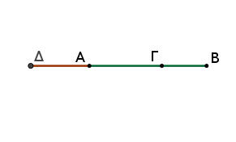
Ἐκβεβλήσθω γὰρ ἡ ΒΑ, καὶ κείσθω τῆς ΒΑ ἡμίσεια ἡ ΑΔ. ἐπεὶ οὖν εὐθεῖα ἡ ΑΒ τέτμηται ἄκρον καὶ μέσον λόγον κατὰ τὸ Γ, καὶ τῷ μείζονι τμήματι τῷ ΑΓ πρόσκειται ἡ ΑΔ ἡμίσεια οὖσα τῆς ΑΒ, τὸ ἄρα ἀπὸ ΓΔ τοῦ ἀπὸ ΔΑ πενταπλάσιόν ἐστιν.
τὸ ἄρα ἀπὸ ΓΔ πρὸς τὸ ἀπὸ ΔΑ λόγον ἔχει, ὃν ἀριθμὸς πρὸς ἀριθμόν· σύμμετρον ἄρα τὸ ἀπὸ ΓΔ τῷ ἀπὸ ΔΑ. ῥητὸν δὲ τὸ ἀπὸ ΔΑ· ῥητὴ γὰρ [ἐστιν] ἡ ΔΑ ἡμίσεια οὖσα τῆς ΑΒ ῥητῆς οὔσης· ῥητὸν ἄρα καὶ τὸ ἀπὸ ΓΔ· ῥητὴ ἄρα ἐστὶ καὶ ἡ ΓΔ.
καὶ ἐπεὶ τὸ ἀπὸ ΓΔ πρὸς τὸ ἀπὸ ΔΑ λόγον οὐκ ἔχει, ὃν τετράγωνος ἀριθμὸς πρὸς τετράγωνον ἀριθμόν, ἀσύμμετρος ἄρα μήκει ἡ ΓΔ τῇ ΔΑ· αἱ ΓΔ, ΔΑ ἄρα ῥηταί εἰσι δυνάμει μόνον σύμμετροι· ἀποτομὴ ἄρα ἐστὶν ἡ ΑΓ.
πάλιν, ἐπεὶ ἡ ΑΒ ἄκρον καὶ μέσον λόγον τέτμηται, καὶ τὸ μεῖζον τμῆμά ἐστιν ἡ ΑΓ, τὸ ἄρα ὑπὸ ΑΒ, ΒΓ τῷ ἀπὸ ΑΓ ἴσον ἐστίν. τὸ ἄρα ἀπὸ τῆς ΑΓ ἀποτομῆς παρὰ τὴν ΑΒ ῥητὴν παραβληθὲν πλάτος ποιεῖ τὴν ΒΓ. τὸ δὲ ἀπὸ ἀποτομῆς παρὰ ῥητὴν παραβαλλόμενον πλάτος ποιεῖ ἀποτομὴν πρώτην· ἀποτομὴ ἄρα πρώτη ἐστὶν ἡ ΓΒ. ἐδείχθη δὲ καὶ ἡ ΓΑ ἀποτομή.
Ἐὰν ἄρα εὐθεῖα ῥητὴ ἄκρον καὶ μέσον λόγον τμηθῇ, ἑκάτερον τῶν τμημάτων ἄλογός ἐστιν ἡ καλουμένη ἀποτομή· ὅπερ ἔδει δεῖξαι.
Ἐὰν πενταγώνου ἰσοπλεύρου αἱ τρεῖς γωνίαι ἤτοι αἱ κατὰ τὸ ἑξῆς ἢ αἱ μὴ κατὰ τὸ ἑξῆς ἴσαι ὦσιν, ἰσογώνιον ἔσται τὸ πεντάγωνον.
Πενταγώνου γὰρ ἰσοπλεύρου τοῦ ΑΒΓΔΕ αἱ τρεῖς γωνίαι πρότερον αἱ κατὰ τὸ ἑξῆς αἱ πρὸς τοῖς Α, Β, Γ ἴσαι ἀλλήλαις ἔστωσαν· λέγω, ὅτι ἰσογώνιόν ἐστι τὸ ΑΒΓΔΕ πεντάγωνον.
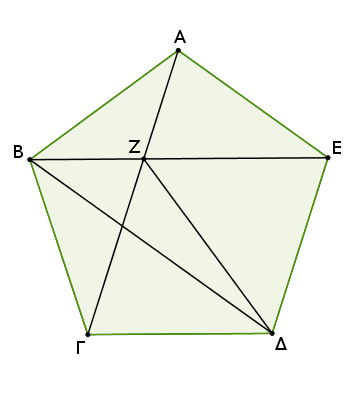
Ἐπεζεύχθωσαν γὰρ αἱ ΑΓ, ΒΕ, ΖΔ. καὶ ἐπεὶ δύο αἱ ΓΒ, ΒΑ δυσὶ ταῖς ΒΑ, ΑΕ ἴσαι εἰσὶν ἑκατέρα ἑκατέρᾳ, καὶ γωνία ἡ ὑπὸ ΓΒΑ γωνίᾳ τῇ ὑπὸ ΒΑΕ ἐστιν ἴση, βάσις ἄρα ἡ ΑΓ βάσει τῇ ΒΕ ἐστιν ἴση, καὶ τὸ ΑΒΓ τρίγωνον τῷ ΑΒΕ τριγώνῳ ἴσον, καὶ αἱ λοιπαὶ γωνίαι ταῖς λοιπαῖς γωνίαις ἴσαι ἔσονται, ὑφ' ἃς αἱ ἴσαι πλευραὶ ὑποτείνουσιν, ἡ μὲν ὑπὸ ΒΓΑ τῇ ὑπὸ ΒΕΑ, ἡ δὲ ὑπὸ ΑΒΕ τῇ ὑπὸ ΓΑΒ· ὥστε καὶ πλευρὰ ἡ ΑΖ πλευρᾷ τῇ ΒΖ ἐστιν ἴση.
ἐδείχθη δὲ καὶ ὅλη ἡ ΑΓ ὅλῃ τῇ ΒΕ ἴση· καὶ λοιπὴ ἄρα ἡ ΖΓ λοιπῇ τῇ ΖΕ ἐστιν ἴση. ἔστι δὲ καὶ ἡ ΓΔ τῇ ΔΕ ἴση. δύο δὴ αἱ ΖΓ, ΓΔ δυσὶ ταῖς ΖΕ, ΕΔ ἴσαι εἰσίν· καὶ βάσις αὐτῶν κοινὴ ἡ ΖΔ· γωνία ἄρα ἡ ὑπὸ ΖΓΔ γωνίᾳ τῇ ὑπὸ ΖΕΔ ἐστιν ἴση. ἐδείχθη δὲ καὶ ἡ ὑπὸ ΒΓΑ τῇ ὑπὸ ΑΕΒ ἴση· καὶ ὅλη ἄρα ἡ ὑπὸ ΒΓΔ ὅλῃ τῇ ὑπὸ ΑΕΔ ἴση. ἀλλ' ἡ ὑπὸ ΒΓΔ ἴση ὑπόκειται ταῖς πρὸς τοῖς Α, Β γωνίαις· καὶ ἡ ὑπὸ ΑΕΔ ἄρα ταῖς πρὸς τοῖς Α, Β γωνίαις ἴση ἐστίν. ὁμοίως δὴ δείξομεν, ὅτι καὶ ἡ ὑπὸ ΓΔΕ γωνία ἴση ἐστὶ ταῖς πρὸς τοῖς Α, Β, Γ γωνίαις· ἰσογώνιον ἄρα ἐστὶ τὸ ΑΒΓΔΕ πεντάγωνον.
Ἀλλὰ δὴ μὴ ἔστωσαν ἴσαι αἱ κατὰ τὸ ἑξῆς γωνίαι, ἀλλ' ἔστωσαν ἴσαι αἱ πρὸς τοῖς Α, Γ, Δ σημείοις· λέγω, ὅτι καὶ οὕτως ἰσογώνιόν ἐστι τὸ ΑΒΓΔΕ πεντάγωνον.
Ἐπεζεύχθω γὰρ ἡ ΒΔ. καὶ ἐπεὶ δύο αἱ ΒΑ, ΑΕ δυσὶ ταῖς ΒΓ, ΓΔ ἴσαι εἰσὶ καὶ γωνίας ἴσας περιέχουσιν, βάσις ἄρα ἡ ΒΕ βάσει τῇ ΒΔ ἴση ἐστίν, καὶ τὸ ΑΒΕ τρίγωνον τῷ ΒΓΔ τριγώνῳ ἴσον ἐστίν, καὶ αἱ λοιπαὶ γωνίαι ταῖς λοιπαῖς γωνίαις ἴσαι ἔσονται, ὑφ' ἃς αἱ ἴσαι πλευραὶ ὑποτείνουσιν· ἴση ἄρα ἐστὶν ἡ ὑπὸ ΑΕΒ γωνία τῇ ὑπὸ ΓΔΒ. ἔστι δὲ καὶ ἡ ὑπὸ ΒΕΔ γωνία τῇ ὑπὸ ΒΔΕ ἴση, ἐπεὶ καὶ πλευρὰ ἡ ΒΕ πλευρᾷ τῇ ΒΔ ἐστιν ἴση. καὶ ὅλη ἄρα ἡ ὑπὸ ΑΕΔ γωνία ὅλῃ τῇ ὑπὸ ΓΔΕ ἐστιν ἴση. ἀλλὰ ἡ ὑπὸ ΓΔΕ ταῖς πρὸς τοῖς Α, Γ γωνίαις ὑπόκειται ἴση· καὶ ἡ ὑπὸ ΑΕΔ ἄρα γωνία ταῖς πρὸς τοῖς Α, Γ ἴση ἐστίν. διὰ τὰ αὐτὰ δὴ καὶ ἡ ὑπὸ ΑΒΓ ἴση ἐστὶ ταῖς πρὸς τοῖς Α, Γ, Δ γωνίαις. ἰσογώνιον ἄρα ἐστὶ τὸ ΑΒΓΔΕ πεντάγωνον· ὅπερ ἔδει δεῖξαι.
Ἐὰν πενταγώνου ἰσοπλεύρου καὶ ἰσογωνίου τὰς κατὰ τὸ ἑξῆς δύο γωνίας ὑποτείνωσιν εὐθεῖαι, ἄκρον καὶ μέσον λόγον τέμνουσιν ἀλλήλας, καὶ τὰ μείζονα αὐτῶν τμήματα ἴσα ἐστὶ τῇ τοῦ πενταγώνου πλευρᾷ.
Πενταγώνου γὰρ ἰσοπλεύρου καὶ ἰσογωνίου τοῦ ΑΒΓ ΔΕ δύο γωνίας τὰς κατὰ τὸ ἑξῆς τὰς πρὸς τοῖς Α, Β ὑποτεινέτωσαν εὐθεῖαι αἱ ΑΓ, ΒΕ τέμνουσαι ἀλλήλας κατὰ τὸ Θ σημεῖον· λέγω, ὅτι ἑκατέρα αὐτῶν ἄκρον καὶ μέσον λόγον τέτμηται κατὰ τὸ Θ σημεῖον, καὶ τὰ μείζονα αὐτῶν τμήματα ἴσα ἐστὶ τῇ τοῦ πενταγώνου πλευρᾷ.
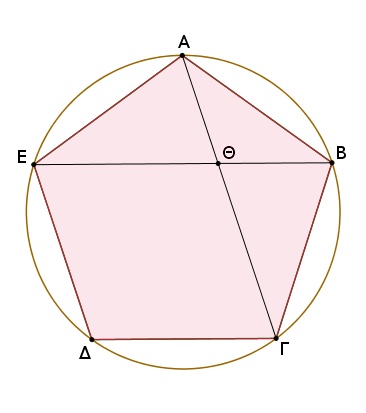
Περιγεγράφθω γὰρ περὶ τὸ ΑΒΓΔΕ πεντάγωνον κύκλος ὁ ΑΒΓΔΕ. καὶ ἐπεὶ δύο εὐθεῖαι αἱ ΕΑ, ΑΒ δυσὶ ταῖς ΑΒ, ΒΓ ἴσαι εἰσὶ καὶ γωνίας ἴσας περιέχουσιν, βάσις ἄρα ἡ ΒΕ βάσει τῇ ΑΓ ἴση ἐστίν, καὶ τὸ ΑΒΕ τρίγωνον τῷ ΑΒΓ τριγώνῳ ἴσον ἐστίν, καὶ αἱ λοιπαὶ γωνίαι ταῖς λοιπαῖς γωνίαις ἴσαι ἔσονται ἑκατέρα ἑκατέρᾳ, ὑφ' ἃς αἱ ἴσαι πλευραὶ ὑποτείνουσιν.
ἴση ἄρα ἐστὶν ἡ ὑπὸ ΒΑΓ γωνία τῇ ὑπὸ ΑΒΕ· διπλῆ ἄρα ἡ ὑπὸ ΑΘΕ τῆς ὑπὸ ΒΑΘ. ἔστι δὲ καὶ ἡ ὑπὸ ΕΑΓ τῆς ὑπὸ ΒΑΓ διπλῆ, ἐπειδήπερ καὶ περιφέρεια ἡ ΕΔΓ περιφερείας τῆς ΓΒ ἐστι διπλῆ· ἴση ἄρα ἡ ὑπὸ ΘΑΕ γωνία τῇ ὑπὸ ΑΘΕ· ὥστε καὶ ἡ ΘΕ εὐθεῖα τῇ ΕΑ, τουτέστι τῇ ΑΒ ἐστιν ἴση.
καὶ ἐπεὶ ἴση ἐστὶν ἡ ΒΑ εὐθεῖα τῇ ΑΕ, ἴση ἐστὶ καὶ γωνία ἡ ὑπὸ ΑΒΕ τῇ ὑπὸ ΑΕΒ. ἀλλὰ ἡ ὑπὸ ΑΒΕ τῇ ὑπὸ ΒΑΘ ἐδείχθη ἴση· καὶ ἡ ὑπὸ ΒΕΑ ἄρα τῇ ὑπὸ ΒΑΘ ἐστιν ἴση. καὶ κοινὴ τῶν δύο τριγώνων τοῦ τε ΑΒΕ καὶ τοῦ ΑΒΘ ἐστιν ἡ ὑπὸ ΑΒΕ· λοιπὴ ἄρα ἡ ὑπὸ ΒΑΕ γωνία λοιπῇ τῇ ὑπὸ ΑΘΒ ἐστιν ἴση· ἰσογώνιον ἄρα ἐστὶ τὸ ΑΒΕ τρίγωνον τῷ ΑΒΘ τριγώνῳ· ἀνάλογον ἄρα ἐστὶν ὡς ἡ ΕΒ πρὸς τὴν ΒΑ, οὕτως ἡ ΑΒ πρὸς τὴν ΒΘ. ἴση δὲ ἡ ΒΑ τῇ ΕΘ· ὡς ἄρα ἡ ΒΕ πρὸς τὴν ΕΘ, οὕτως ἡ ΕΘ πρὸς τὴν ΘΒ. μείζων δὲ ἡ ΒΕ τῆς ΕΘ· μείζων ἄρα καὶ ἡ ΕΘ τῆς ΘΒ. ἡ ΒΕ ἄρα ἄκρον καὶ μέσον λόγον τέτμηται κατὰ τὸ Θ, καὶ τὸ μεῖζον τμῆμα τὸ ΘΕ ἴσον ἐστὶ τῇ τοῦ πενταγώνου πλευρᾷ. ὁμοίως δὴ δείξομεν, ὅτι καὶ ἡ ΑΓ ἄκρον καὶ μέσον λόγον τέτμηται κατὰ τὸ Θ, καὶ τὸ μεῖζον αὐτῆς τμῆμα ἡ ΓΘ ἴσον ἐστὶ τῇ τοῦ πενταγώνου πλευρᾷ· ὅπερ ἔδει δεῖξαι.
Ἐὰν ἡ τοῦ ἑξαγώνου πλευρὰ καὶ ἡ τοῦ δεκαγώνου τῶν εἰς τὸν αὐτὸν κύκλον ἐγγραφομένων συντεθῶσιν, ἡ ὅλη εὐθεῖα ἄκρον καὶ μέσον λόγον τέτμηται, καὶ τὸ μεῖζον αὐτῆς τμῆμά ἐστιν ἡ τοῦ ἑξαγώνου πλευρά.
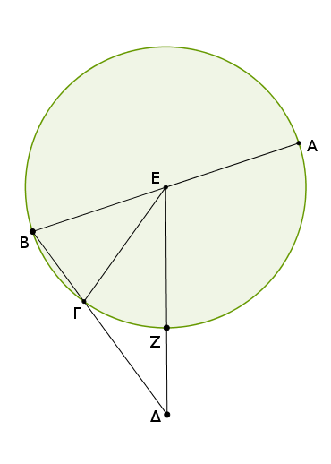
Ἔστω κύκλος ὁ ΑΒΓ, καὶ τῶν εἰς τὸν ΑΒΓ κύκλον ἐγγραφομένων σχημάτων, δεκαγώνου μὲν ἔστω πλευρὰ ἡ ΒΓ, ἑξαγώνου δὲ ἡ ΓΔ, καὶ ἔστωσαν ἐπ' εὐθείας· λέγω, ὅτι ἡ ὅλη εὐθεῖα ἡ ΒΔ ἄκρον καὶ μέσον λόγον τέτμηται, καὶ τὸ μεῖζον αὐτῆς τμῆμά ἐστιν ἡ ΓΔ.
Εἰλήφθω γὰρ τὸ κέντρον τοῦ κύκλου τὸ Ε σημεῖον, καὶ ἐπεζεύχθωσαν αἱ ΕΒ, ΕΓ, ΕΔ, καὶ διήχθω ἡ ΒΕ ἐπὶ τὸ Α. ἐπεὶ δεκαγώνου ἰσοπλεύρου πλευρά ἐστιν ἡ ΒΓ, πενταπλασίων ἄρα ἡ ΑΓΒ περιφέρεια τῆς ΒΓ περιφερείας· τετραπλασίων ἄρα ἡ ΑΓ περιφέρεια τῆς ΓΒ.
ὡς δὲ ἡ ΑΓ περιφέρεια πρὸς τὴν ΓΒ, οὕτως ἡ ὑπὸ ΑΕΓ γωνία πρὸς τὴν ὑπὸ ΓΕΒ· τετραπλασίων ἄρα ἡ ὑπὸ ΑΕΓ τῆς ὑπὸ ΓΕΒ.
καὶ ἐπεὶ ἴση ἡ ὑπὸ ΕΒΓ γωνία τῇ ὑπὸ ΕΓΒ, ἡ ἄρα ὑπὸ ΑΕΓ γωνία διπλασία ἐστὶ τῆς ὑπὸ ΕΓΒ. καὶ ἐπεὶ ἴση ἐστὶν ἡ ΕΓ εὐθεῖα τῇ ΓΔ· ἑκατέρα γὰρ αὐτῶν ἴση ἐστὶ τῇ τοῦ ἑξαγώνου πλευρᾷ τοῦ εἰς τὸν ΑΒΓ κύκλον [ἐγγραφομένου]· ἴση ἐστὶ καὶ ἡ ὑπὸ ΓΕΔ γωνία τῇ ὑπὸ ΓΔΕ γωνίᾳ· διπλασία ἄρα ἡ ὑπὸ ΕΓΒ γωνία τῆς ὑπὸ ΕΔΓ.
ἀλλὰ τῆς ὑπὸ ΕΓΒ διπλασία ἐδείχθη ἡ ὑπὸ ΑΕΓ· τετραπλασία ἄρα ἡ ὑπὸ ΑΕΓ τῆς ὑπὸ ΕΔΓ. ἐδείχθη δὲ καὶ τῆς ὑπὸ ΒΕΓ τετραπλασία ἡ ὑπὸ ΑΕΓ· ἴση ἄρα ἡ ὑπὸ ΕΔΓ τῇ ὑπὸ ΒΕΓ. κοινὴ δὲ τῶν δύο τριγώνων, τοῦ τε ΒΕΓ καὶ τοῦ ΒΕΔ, ἡ ὑπὸ ΕΒΔ γωνία· καὶ λοιπὴ ἄρα ἡ ὑπὸ ΒΕΔ τῇ ὑπὸ ΕΓΒ ἐστιν ἴση· ἰσογώνιον ἄρα ἐστὶ τὸ ΕΒΔ τρίγωνον τῷ ΕΒΓ τριγώνῳ.
ἀνάλογον ἄρα ἐστὶν ὡς ἡ ΔΒ πρὸς τὴν ΒΕ, οὕτως ἡ ΕΒ πρὸς τὴν ΒΓ. ἴση δὲ ἡ ΕΒ τῇ ΓΔ. ἔστιν ἄρα ὡς ἡ ΒΔ πρὸς τὴν ΔΓ, οὕτως ἡ ΔΓ πρὸς τὴν ΓΒ. μείζων δὲ ἡ ΒΔ τῆς ΔΓ· μείζων ἄρα καὶ ἡ ΔΓ τῆς ΓΒ. ἡ ΒΔ ἄρα εὐθεῖα ἄκρον καὶ μέσον λόγον τέτμηται [κατὰ τὸ Γ], καὶ τὸ μεῖζον τμῆμα αὐτῆς ἐστιν ἡ ΔΓ· ὅπερ ἔδει δεῖξαι.
Ἐὰν εἰς κύκλον πεντάγωνον ἰσόπλευρον ἐγγραφῇ, ἡ τοῦ πενταγώνου πλευρὰ δύναται τήν τε τοῦ ἑξαγώνου καὶ τὴν τοῦ δεκαγώνου τῶν εἰς τὸν αὐτὸν κύκλον ἐγγραφομένων.
Ἔστω κύκλος ὁ ΑΒΓΔΕ, καὶ εἰς τὸν ΑΒΓΔΕ κύκλον πεντάγωνον ἰσόπλευρον ἐγγεγράφθω τὸ ΑΒΓΔΕ. λέγω, ὅτι ἡ τοῦ ΑΒΓΔΕ πενταγώνου πλευρὰ δύναται τήν τε τοῦ ἑξαγώνου καὶ τὴν τοῦ δεκαγώνου πλευρὰν τῶν εἰς τὸν ΑΒΓΔΕ κύκλον ἐγγραφομένων.
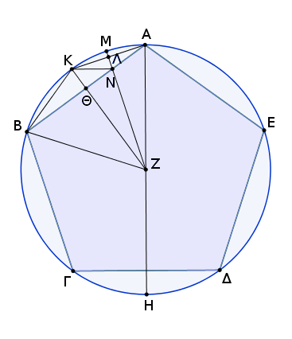
Εἰλήφθω γὰρ τὸ κέντρον τοῦ κύκλου τὸ Ζ σημεῖον, καὶ ἐπιζευχθεῖσα ἡ ΑΖ διήχθω ἐπὶ τὸ Η σημεῖον, καὶ ἐπεζεύχθω ἡ ΖΒ, καὶ ἀπὸ τοῦ Ζ ἐπὶ τὴν ΑΒ κάθετος ἤχθω ἡ ΖΘ, καὶ διήχθω ἐπὶ τὸ Κ, καὶ ἐπεζεύχθωσαν αἱ ΑΚ, ΚΒ, καὶ πάλιν ἀπὸ τοῦ Ζ ἐπὶ τὴν ΑΚ κάθετος ἤχθω ἡ ΖΛ, καὶ διήχθω ἐπὶ τὸ Μ, καὶ ἐπεζεύχθω ἡ ΚΝ.
ἐπεὶ ἴση ἐστὶν ἡ ΑΒΓΗ περιφέρεια τῇ ΑΕΔΗ περιφερείᾳ, ὧν ἡ ΑΒΓ τῇ ΑΕΔ ἐστιν ἴση, λοιπὴ ἄρα ἡ ΓΗ περιφέρεια λοιπῇ τῇ ΗΔ ἐστιν ἴση. πενταγώνου δὲ ἡ ΓΔ· δεκαγώνου ἄρα ἡ ΓΗ.
καὶ ἐπεὶ ἴση ἐστὶν ἡ ΖΑ τῇ ΖΒ, καὶ κάθετος ἡ ΖΘ, ἴση ἄρα καὶ ἡ ὑπὸ ΑΖΚ γωνία τῇ ὑπὸ ΚΖΒ. ὥστε καὶ περιφέρεια ἡ ΑΚ τῇ ΚΒ ἐστιν ἴση· διπλῆ ἄρα ἡ ΑΒ περιφέρεια τῆς ΒΚ περιφερείας· δεκαγώνου ἄρα πλευρά ἐστιν ἡ ΑΚ εὐθεῖα. διὰ τὰ αὐτὰ δὴ καὶ ἡ ΑΚ τῆς ΚΜ ἐστι διπλῆ.
καὶ ἐπεὶ διπλῆ ἐστιν ἡ ΑΒ περιφέρεια τῆς ΒΚ περιφερείας, ἴση δὲ ἡ ΓΔ περιφέρεια τῇ ΑΒ περιφερείᾳ, διπλῆ ἄρα καὶ ἡ ΓΔ περιφέρεια τῆς ΒΚ περιφερείας. ἔστι δὲ ἡ ΓΔ περιφέρεια καὶ τῆς ΓΗ διπλῆ· ἴση ἄρα ἡ ΓΗ περιφέρεια τῇ ΒΚ περιφερείᾳ.
ἀλλὰ ἡ ΒΚ τῆς ΚΜ ἐστι διπλῆ, ἐπεὶ καὶ ἡ ΚΑ· καὶ ἡ ΓΗ ἄρα τῆς ΚΜ ἐστι διπλῆ. ἀλλὰ μὴν καὶ ἡ ΓΒ περιφέρεια τῆς ΒΚ περιφερείας ἐστὶ διπλῆ· ἴση γὰρ ἡ ΓΒ περιφέρεια τῇ ΒΑ. καὶ ὅλη ἄρα ἡ ΗΒ περιφέρεια τῆς ΒΜ ἐστι διπλῆ· ὥστε καὶ γωνία ἡ ὑπὸ ΗΖΒ γωνίας τῆς ὑπὸ ΒΖΜ [ἐστι] διπλῆ. ἔστι δὲ ἡ ὑπὸ ΗΖΒ καὶ τῆς ὑπὸ ΖΑΒ διπλῆ· ἴση γὰρ ἡ ὑπὸ ΖΑΒ τῇ ὑπὸ ΑΒΖ. καὶ ἡ ὑπὸ ΒΖΝ ἄρα τῇ ὑπὸ ΖΑΒ ἐστιν ἴση.
κοινὴ δὲ τῶν δύο τριγώνων, τοῦ τε ΑΒΖ καὶ τοῦ ΒΖΝ, ἡ ὑπὸ ΑΒΖ γωνία· λοιπὴ ἄρα ἡ ὑπὸ ΑΖΒ λοιπῇ τῇ ὑπὸ ΒΝΖ ἐστιν ἴση· ἰσογώνιον ἄρα ἐστὶ τὸ ΑΒΖ τρίγωνον τῷ ΒΖΝ τριγώνῳ. ἀνάλογον ἄρα ἐστὶν ὡς ἡ ΑΒ εὐθεῖα πρὸς τὴν ΒΖ, οὕτως ἡ ΖΒ πρὸς τὴν ΒΝ· τὸ ἄρα ὑπὸ τῶν ΑΒΝ ἴσον ἐστὶ τῷ ἀπὸ ΒΖ.
πάλιν ἐπεὶ ἴση ἐστὶν ἡ ΑΛ τῇ ΛΚ, κοινὴ δὲ καὶ πρὸς ὀρθὰς ἡ ΛΝ, βάσις ἄρα ἡ ΚΝ βάσει τῇ ΑΝ ἐστιν ἴση· καὶ γωνία ἄρα ἡ ὑπὸ ΛΚΝ γωνίᾳ τῇ ὑπὸ ΛΑΝ ἐστιν ἴση. ἀλλὰ ἡ ὑπὸ ΛΑΝ τῇ ὑπὸ ΚΒΝ ἐστιν ἴση· καὶ ἡ ὑπὸ ΛΚΝ ἄρα τῇ ὑπὸ ΚΒΝ ἐστιν ἴση. καὶ κοινὴ τῶν δύο τριγώνων τοῦ τε ΑΚΒ καὶ τοῦ ΑΚΝ ἡ πρὸς τῷ Α. λοιπὴ ἄρα ἡ ὑπὸ ΑΚΒ λοιπῇ τῇ ὑπὸ ΚΝΑ ἐστιν ἴση· ἰσογώνιον ἄρα ἐστὶ τὸ ΚΒΑ τρίγωνον τῷ ΚΝΑ τριγώνῳ. ἀνάλογον ἄρα ἐστὶν ὡς ἡ ΒΑ εὐθεῖα πρὸς τὴν ΑΚ, οὕτως ἡ ΚΑ πρὸς τὴν ΑΝ· τὸ ἄρα ὑπὸ τῶν ΒΑΝ ἴσον ἐστὶ τῷ ἀπὸ τῆς ΑΚ. ἐδείχθη δὲ καὶ τὸ ὑπὸ τῶν ΑΒΝ ἴσον τῷ ἀπὸ τῆς ΒΖ· τὸ ἄρα ὑπὸ τῶν ΑΒΝ μετὰ τοῦ ὑπὸ ΒΑΝ, ὅπερ ἐστὶ τὸ ἀπὸ τῆς ΒΑ, ἴσον ἐστὶ τῷ ἀπὸ τῆς ΒΖ μετὰ τοῦ ἀπὸ τῆς ΑΚ. καί ἐστιν ἡ μὲν ΒΑ πενταγώνου πλευρά, ἡ δὲ ΒΖ ἑξαγώνου, ἡ δὲ ΑΚ δεκαγώνου.
Ἡ ἄρα τοῦ πενταγώνου πλευρὰ δύναται τήν τε τοῦ ἑξαγώνου καὶ τὴν τοῦ δεκαγώνου τῶν εἰς τὸν αὐτὸν κύκλον ἐγγραφομένων· ὅπερ ἔδει δεῖξαι.
Ἐὰν εἰς κύκλον ῥητὴν ἔχοντα τὴν διάμετρον πεντάγωνον ἰσόπλευρον ἐγγραφῇ, ἡ τοῦ πενταγώνου πλευρὰ ἄλογός ἐστιν ἡ καλουμένη ἐλάσσων.
Εἰς γὰρ κύκλον τὸν ΑΒΓΔΕ ῥητὴν ἔχοντα τὴν διάμετρον πεντάγωνον ἰσόπλευρον ἐγγεγράφθω τὸ ΑΒΓΔΕ· λέγω, ὅτι ἡ τοῦ [ΑΒΓΔΕ] πενταγώνου πλευρὰ ἄλογός ἐστιν ἡ καλουμένη ἐλάσσων.
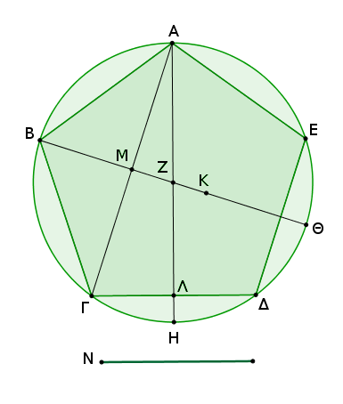
Εἰλήφθω γὰρ τὸ κέντρον τοῦ κύκλου τὸ Ζ σημεῖον, καὶ ἐπεζεύχθωσαν αἱ ΑΖ, ΖΒ καὶ διήχθωσαν ἐπὶ τὰ Η, Θ σημεῖα, καὶ ἐπεζεύχθω ἡ ΑΓ, καὶ κείσθω τῆς ΑΖ τέταρτον μέρος ἡ ΖΚ.
ῥητὴ δὲ ἡ ΑΖ· ῥητὴ ἄρα καὶ ἡ ΖΚ. ἔστι δὲ καὶ ἡ ΒΖ ῥητή· ὅλη ἄρα ἡ ΒΚ ῥητή ἐστιν. καὶ ἐπεὶ ἴση ἐστὶν ἡ ΑΓΗ περιφέρεια τῇ ΑΔΗ περιφερείᾳ, ὧν ἡ ΑΒΓ τῇ ΑΕΔ ἐστιν ἴση, λοιπὴ ἄρα ἡ ΓΗ λοιπῇ τῇ ΗΔ ἐστιν ἴση. καὶ ἐὰν ἐπιζεύξωμεν τὴν ΑΔ, συνάγονται ὀρθαὶ αἱ πρὸς τῷ Λ γωνίαι, καὶ διπλῆ ἡ ΓΔ τῆς ΓΛ. διὰ τὰ αὐτὰ δὴ καὶ αἱ πρὸς τῷ Μ ὀρθαί εἰσιν, καὶ διπλῆ ἡ ΑΓ τῆς ΓΜ.
ἐπεὶ οὖν ἴση ἐστὶν ἡ ὑπὸ ΑΛΓ γωνία τῇ ὑπὸ ΑΜΖ, κοινὴ δὲ τῶν δύο τριγώνων τοῦ τε ΑΓΛ καὶ τοῦ ΑΜΖ ἡ ὑπὸ ΛΑΓ, λοιπὴ ἄρα ἡ ὑπὸ ΑΓΛ λοιπῇ τῇ ὑπὸ ΜΖΑ ἐστιν ἴση· ἰσογώνιον ἄρα ἐστὶ τὸ ΑΓΛ τρίγωνον τῷ ΑΜΖ τριγώνῳ· ἀνάλογον ἄρα ἐστὶν ὡς ἡ ΛΓ πρὸς ΓΑ, οὕτως ἡ ΜΖ πρὸς ΖΑ· καὶ τῶν ἡγουμένων τὰ διπλάσια· ὡς ἄρα ἡ τῆς ΛΓ διπλῆ πρὸς τὴν ΓΑ, οὕτως ἡ τῆς ΜΖ διπλῆ πρὸς τὴν ΖΑ. ὡς δὲ ἡ τῆς ΜΖ διπλῆ πρὸς τὴν ΖΑ, οὕτως ἡ ΜΖ πρὸς τὴν ἡμίσειαν τῆς ΖΑ· καὶ ὡς ἄρα ἡ τῆς ΛΓ διπλῆ πρὸς τὴν ΓΑ, οὕτως ἡ ΜΖ πρὸς τὴν ἡμίσειαν τῆς ΖΑ. καὶ τῶν ἑπομένων τὰ ἡμίσεα· ὡς ἄρα ἡ τῆς ΛΓ διπλῆ πρὸς τὴν ἡμίσειαν τῆς ΓΑ, οὕτως ἡ ΜΖ πρὸς τὸ τέταρτον τῆς ΖΑ.
καί ἐστι τῆς μὲν ΛΓ διπλῆ ἡ ΔΓ, τῆς δὲ ΓΑ ἡμίσεια ἡ ΓΜ, τῆς δὲ ΖΑ τέταρτον μέρος ἡ ΖΚ· ἔστιν ἄρα ὡς ἡ ΔΓ πρὸς τὴν ΓΜ, οὕτως ἡ ΜΖ πρὸς τὴν ΖΚ. συνθέντι καὶ ὡς συναμφότερος ἡ ΔΓΜ πρὸς τὴν ΓΜ, οὕτως ἡ ΜΚ πρὸς ΚΖ· καὶ ὡς ἄρα τὸ ἀπὸ συναμφοτέρου τῆς ΔΓΜ πρὸς τὸ ἀπὸ ΓΜ, οὕτως τὸ ἀπὸ ΜΚ πρὸς τὸ ἀπὸ ΚΖ.
καὶ ἐπεὶ τῆς ὑπὸ δύο πλευρὰς τοῦ πενταγώνου ὑποτεινούσης, οἷον τῆς ΑΓ, ἄκρον καὶ μέσον λόγον τεμνομένης τὸ μεῖζον τμῆμα ἴσον ἐστὶ τῇ τοῦ πενταγώνου πλευρᾷ, τουτέστι τῇ ΔΓ, τὸ δὲ μεῖζον τμῆμα προσλαβὸν τὴν ἡμίσειαν τῆς ὅλης πενταπλάσιον δύναται τοῦ ἀπὸ τῆς ἡμισείας τῆς ὅλης, καί ἐστιν ὅλης τῆς ΑΓ ἡμίσεια ἡ ΓΜ, τὸ ἄρα ἀπὸ τῆς ΔΓΜ ὡς μιᾶς πενταπλάσιόν ἐστι τοῦ ἀπὸ τῆς ΓΜ. ὡς δὲ τὸ ἀπὸ τῆς ΔΓΜ ὡς μιᾶς πρὸς τὸ ἀπὸ τῆς ΓΜ, οὕτως ἐδείχθη τὸ ἀπὸ τῆς ΜΚ πρὸς τὸ ἀπὸ τῆς ΚΖ· πενταπλάσιον ἄρα τὸ ἀπὸ τῆς ΜΚ τοῦ ἀπὸ τῆς ΚΖ.
ῥητὸν δὲ τὸ ἀπὸ τῆς ΚΖ· ῥητὴ γὰρ ἡ διάμετρος· ῥητὸν ἄρα καὶ τὸ ἀπὸ τῆς ΜΚ· ῥητὴ ἄρα ἐστὶν ἡ ΜΚ [δυνάμει μόνον]. καὶ ἐπεὶ τετραπλασία ἐστὶν ἡ ΒΖ τῆς ΖΚ, πενταπλασία ἄρα ἐστὶν ἡ ΒΚ τῆς ΚΖ· εἰκοσιπενταπλάσιον ἄρα τὸ ἀπὸ τῆς ΒΚ τοῦ ἀπὸ τῆς ΚΖ. πενταπλάσιον δὲ τὸ ἀπὸ τῆς ΜΚ τοῦ ἀπὸ τῆς ΚΖ· πενταπλάσιον ἄρα τὸ ἀπὸ τῆς ΒΚ τοῦ ἀπὸ τῆς ΚΜ· τὸ ἄρα ἀπὸ τῆς ΒΚ πρὸς τὸ ἀπὸ ΚΜ λόγον οὐκ ἔχει, ὃν τετράγωνος ἀριθμὸς πρὸς τετράγωνον ἀριθμόν· ἀσύμμετρος ἄρα ἐστὶν ἡ ΒΚ τῇ ΚΜ μήκει. καί ἐστι ῥητὴ ἑκατέρα αὐτῶν. αἱ ΒΚ, ΚΜ ἄρα ῥηταί εἰσι δυνάμει μόνον σύμμετροι.
ἐὰν δὲ ἀπὸ ῥητῆς ῥητὴ ἀφαιρεθῇ δυνάμει μόνον σύμμετρος οὖσα τῇ ὅλῃ, ἡ λοιπὴ ἄλογός ἐστιν ἀποτομή· ἀποτομὴ ἄρα ἐστὶν ἡ ΜΒ, προσαρμόζουσα δὲ αὐτῇ ἡ ΜΚ. λέγω δή, ὅτι καὶ τετάρτη.
ᾧ δὴ μεῖζόν ἐστι τὸ ἀπὸ τῆς ΒΚ τοῦ ἀπὸ τῆς ΚΜ, ἐκείνῳ ἴσον ἔστω τὸ ἀπὸ τῆς Ν· ἡ ΒΚ ἄρα τῆς ΚΜ μεῖζον δύναται τῇ Ν. καὶ ἐπεὶ σύμμετρός ἐστιν ἡ ΚΖ τῇ ΖΒ, καὶ συνθέντι σύμμετρός ἐστιν ἡ ΚΒ τῇ ΖΒ. ἀλλὰ ἡ ΒΖ τῇ ΒΘ σύμμετρός ἐστιν· καὶ ἡ ΒΚ ἄρα τῇ ΒΘ σύμμετρός ἐστιν. καὶ ἐπεὶ πενταπλάσιόν ἐστι τὸ ἀπὸ τῆς ΒΚ τοῦ ἀπὸ τῆς ΚΜ, τὸ ἄρα ἀπὸ τῆς ΒΚ πρὸς τὸ ἀπὸ τῆς ΚΜ λόγον ἔχει, ὃν ε πρὸς ἕν. ἀναστρέψαντι ἄρα τὸ ἀπὸ τῆς ΒΚ πρὸς τὸ ἀπὸ τῆς Ν λόγον ἔχει, ὅν ε πρὸς δ. οὐχ ὃν τετράγωνος πρὸς τετράγωνον· ἀσύμετρος ἄρα ἐστὶν ἡ ΒΚ τῇ Ν· ἡ ΒΚ ἄρα τῆς ΚΜ μεῖζον δύναται τῷ ἀπὸ ἀσυμμέτρου ἑαυτῇ.
ἐπεὶ οὖν ὅλη ἡ ΒΚ τῆς προσαρμοζούσης τῆς ΚΜ μεῖζον δύναται τῷ ἀπὸ ἀσυμμέτρου ἑαυτῇ, καὶ ὅλη ἡ ΒΚ σύμμετρός ἐστι τῇ ἐκκειμένῃ ῥητῇ τῇ ΒΘ, ἀποτομὴ ἄρα τετάρτη ἐστὶν ἡ ΜΒ. τὸ δὲ ὑπὸ ῥητῆς καὶ ἀποτομῆς τετάρτης περιεχόμενον ὀρθογώνιον ἄλογόν ἐστιν, καὶ ἡ δυναμένη αὐτὸ ἄλογός ἐστιν, καλεῖται δὲ ἐλάττων. δύναται δὲ τὸ ὑπὸ τῶν ΘΒΜ ἡ ΑΒ διὰ τὸ ἐπιζευγνυμένης τῆς ΑΘ ἰσογώνιον γίνεσθαι τὸ ΑΒΘ τρίγωνον τῷ ΑΒΜ τριγώνῳ καὶ εἶναι ὡς τὴν ΘΒ πρὸς τὴν ΒΑ, οὕτως τὴν ΑΒ πρὸς τὴν ΒΜ. Ἡ ἄρα ΑΒ τοῦ πενταγώνου πλευρὰ ἄλογός ἐστιν ἡ καλουμένη ἐλάττων· ὅπερ ἔδει δεῖξαι.
Ἐὰν εἰς κύκλον τρίγωνον ἰσόπλευρον ἐγγραφῇ, ἡ τοῦ τριγώνου πλευρὰ δυνάμει τριπλασίων ἐστὶ τῆς ἐκ τοῦ κέντρου τοῦ κύκλου.
Ἔστω κύκλος ὁ ΑΒΓ, καὶ εἰς αὐτὸν τρίγωνον ἰσόπλευρον ἐγγεγράφθω τὸ ΑΒΓ· λέγω, ὅτι τοῦ ΑΒΓ τριγώνου μία πλευρὰ δυνάμει τριπλασίων ἐστὶ τῆς ἐκ τοῦ κέντρου τοῦ ΑΒΓ κύκλου.
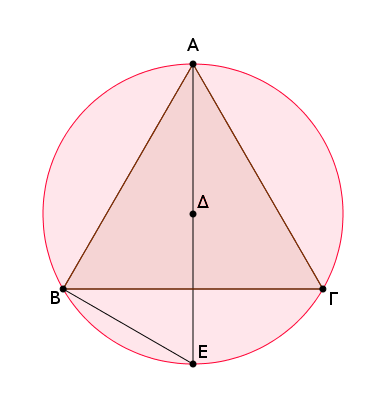
Εἰλήφθω γὰρ τὸ κέντρον τοῦ ΑΒΓ κύκλου τὸ Δ, καὶ ἐπιζευχθεῖσα ἡ ΑΔ διήχθω ἐπὶ τὸ Ε, καὶ ἐπεζεύχθω ἡ ΒΕ.
καὶ ἐπεὶ ἰσόπλευρόν ἐστι τὸ ΑΒΓ τρίγωνον, ἡ ΒΕΓ ἄρα περιφέρεια τρίτον μέρος ἐστὶ τῆς τοῦ ΑΒΓ κύκλου περιφερείας. ἡ ἄρα ΒΕ περιφέρεια ἕκτον ἐστὶ μέρος τῆς τοῦ κύκλου περιφερείας· ἑξαγώνου ἄρα ἐστὶν ἡ ΒΕ εὐθεῖα· ἴση ἄρα ἐστὶ τῇ ἐκ τοῦ κέντρου τῇ ΔΕ. καὶ ἐπεὶ διπλῆ ἐστιν ἡ ΑΕ τῆς ΔΕ, τετραπλάσιόν ἐστι τὸ ἀπὸ τῆς ΑΕ τοῦ ἀπὸ τῆς ΕΔ, τουτέστι τοῦ ἀπὸ τῆς ΒΕ. ἴσον δὲ τὸ ἀπὸ τῆς ΑΕ τοῖς ἀπὸ τῶν ΑΒ, ΒΕ· τὰ ἄρα ἀπὸ τῶν ΑΒ, ΒΕ τετραπλάσιά ἐστι τοῦ ἀπὸ τῆς ΒΕ. διελόντι ἄρα τὸ ἀπὸ τῆς ΑΒ τριπλάσιόν ἐστι τοῦ ἀπὸ ΒΕ. ἴση δὲ ἡ ΒΕ τῇ ΔΕ· τὸ ἄρα ἀπὸ τῆς ΑΒ τριπλάσιόν ἐστι τοῦ ἀπὸ τῆς ΔΕ.
Ἡ ἄρα τοῦ τριγώνου πλευρὰ δυνάμει τριπλασία ἐστὶ τῆς ἐκ τοῦ κέντρου [τοῦ κύκλου]· ὅπερ ἔδει δεῖξαι.
Πυραμίδα συστήσασθαι καὶ σφαίρᾳ περιλαβεῖν τῇ δοθείσῃ καὶ δεῖξαι, ὅτι ἡ τῆς σφαίρας διάμετρος δυνάμει ἡμιολία ἐστὶ τῆς πλευρᾶς τῆς πυραμίδος.
Ἐκκείσθω ἡ τῆς δοθείσης σφαίρας διάμετρος ἡ ΑΒ, καὶ τετμήσθω κατὰ τὸ Γ σημεῖον, ὥστε διπλασίαν εἶναι τὴν ΑΓ τῆς ΓΒ· καὶ γεγράφθω ἐπὶ τῆς ΑΒ ἡμικύκλιον τὸ ΑΔΒ, καὶ ἤχθω ἀπὸ τοῦ Γ σημείου τῇ ΑΒ πρὸς ὀρθὰς ἡ ΓΔ, καὶ ἐπεζεύχθω ἡ ΔΑ· καὶ ἐκκείσθω κύκλος ὁ ΕΖΗ ἴσην ἔχων τὴν ἐκ τοῦ κέντρου τῇ ΔΓ, καὶ ἐγγεγράφθω εἰς τὸν ΕΖΗ κύκλον τρίγωνον ἰσόπλευρον τὸ ΕΖΗ· καὶ εἰλήφθω τὸ κέντρον τοῦ κύκλου τὸ Θ σημεῖον, καὶ ἐπεζεύχθωσαν αἱ ΕΘ, ΘΖ, ΘΗ· καὶ ἀνεστάτω ἀπὸ τοῦ Θ σημείου τῷ τοῦ ΕΖΗ κύκλου ἐπιπέδῳ πρὸς ὀρθὰς ἡ ΘΚ, καὶ ἀφῃρήσθω ἀπὸ τῆς ΘΚ τῇ ΑΓ εὐθείᾳ ἴση ἡ ΘΚ, καὶ ἐπεζεύχθωσαν αἱ ΚΕ, ΚΖ, ΚΗ.
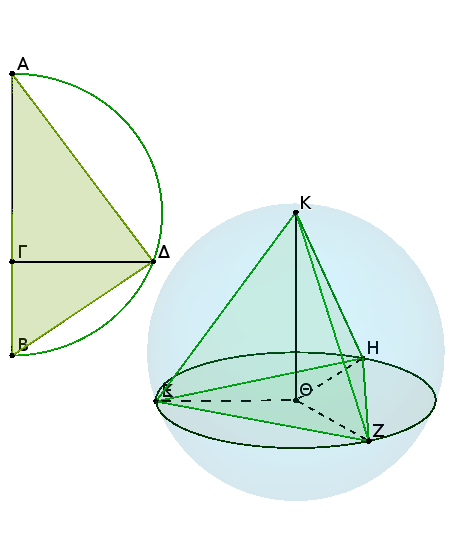
καὶ ἐπεὶ ἡ ΚΘ ὀρθή ἐστι πρὸς τὸ τοῦ ΕΖΗ κύκλου ἐπίπεδον, καὶ πρὸς πάσας ἄρα τὰς ἁπτομένας αὐτῆς εὐθείας καὶ οὔσας ἐν τῷ τοῦ ΕΖΗ κύκλου ἐπιπέδῳ ὀρθὰς ποιήσει γωνίας. ἅπτεται δὲ αὐτῆς ἑκάστη τῶν ΘΕ, ΘΖ, ΘΗ· ἡ ΘΚ ἄρα πρὸς ἑκάστην τῶν ΘΕ, ΘΖ, ΘΗ ὀρθή ἐστιν.
καὶ ἐπεὶ ἴση ἐστὶν ἡ μὲν ΑΓ τῇ ΘΚ, ἡ δὲ ΓΔ τῇ ΘΕ, καὶ ὀρθὰς γωνίας περιέχουσιν, βάσις ἄρα ἡ ΔΑ βάσει τῇ ΚΕ ἐστιν ἴση. διὰ τὰ αὐτὰ δὴ καὶ ἑκατέρα τῶν ΚΖ, ΚΗ τῇ ΔΑ ἐστιν ἴση· αἱ τρεῖς ἄρα αἱ ΚΕ, ΚΖ, ΚΗ ἴσαι ἀλλήλαις εἰσίν. καὶ ἐπεὶ διπλῆ ἐστιν ἡ ΑΓ τῆς ΓΒ, τριπλῆ ἄρα ἡ ΑΒ τῆς ΒΓ. ὡς δὲ ἡ ΑΒ πρὸς τὴν ΒΓ, οὕτως τὸ ἀπὸ τῆς ΑΔ πρὸς τὸ ἀπὸ τῆς ΔΓ, ὡς ἑξῆς δειχθήσεται. τριπλάσιον ἄρα τὸ ἀπὸ τῆς ΑΔ τοῦ ἀπὸ τῆς ΔΓ.
ἔστι δὲ καὶ τὸ ἀπὸ τῆς ΖΕ τοῦ ἀπὸ τῆς ΕΘ τριπλάσιον, καί ἐστιν ἴση ἡ ΔΓ τῇ ΕΘ· ἴση ἄρα καὶ ἡ ΔΑ τῇ ΕΖ. ἀλλὰ ἡ ΔΑ ἑκάστῃ τῶν ΚΕ, ΚΖ, ΚΗ ἐδείχθη ἴση· καὶ ἑκάστη ἄρα τῶν ΕΖ, ΖΗ, ΗΕ ἑκάστῃ τῶν ΚΕ, ΚΖ, ΚΗ ἐστιν ἴση· ἰσόπλευρα ἄρα ἐστὶ τὰ τέσσαρα τρίγωνα τὰ ΕΖΗ, ΚΕΖ, ΚΖΗ, ΚΕΗ. πυραμὶς ἄρα συνέσταται ἐκ τεσσάρων τριγώνων ἰσοπλεύρων, ἧς βάσις μέν ἐστι τὸ ΕΖΗ τρίγωνον, κορυφὴ δὲ τὸ Κ σημεῖον.
Δεῖ δὴ αὐτὴν καὶ σφαίρᾳ περιλαβεῖν τῇ δοθείσῃ καὶ δεῖξαι, ὅτι ἡ τῆς σφαίρας διάμετρος ἡμιολία ἐστὶ δυνάμει τῆς πλευρᾶς τῆς πυραμίδος.
Ἐκβεβλήσθω γὰρ ἐπ' εὐθείας τῇ ΚΘ εὐθεῖα ἡ ΘΛ, καὶ κείσθω τῇ ΓΒ ἴση ἡ ΘΛ. καὶ ἐπεί ἐστιν ὡς ἡ ΑΓ πρὸς τὴν ΓΔ, οὕτως ἡ ΓΔ πρὸς τὴν ΓΒ, ἴση δὲ ἡ μὲν ΑΓ τῇ ΚΘ, ἡ δὲ ΓΔ τῇ ΘΕ, ἡ δὲ ΓΒ τῇ ΘΛ, ἔστιν ἄρα ὡς ἡ ΚΘ πρὸς τὴν ΘΕ, οὕτως ἡ ΕΘ πρὸς τὴν ΘΛ· τὸ ἄρα ὑπὸ τῶν ΚΘ, ΘΛ ἴσον ἐστὶ τῷ ἀπὸ τῆς ΕΘ. καί ἐστιν ὀρθὴ ἑκατέρα τῶν ὑπὸ ΚΘΕ, ΕΘΛ γωνιῶν· τὸ ἄρα ἐπὶ τῆς ΚΛ γραφόμενον ἡμικύκλιον ἥξει καὶ διὰ τοῦ Ε [ἐπειδήπερ ἐὰν ἐπιζεύξωμεν τὴν ΕΛ, ὀρθὴ γίνεται ἡ ὑπὸ ΛΕΚ γωνία διὰ τὸ ἰσογώνιον γίνεσθαι τὸ ΕΛΚ τρίγωνον ἑκατέρῳ τῶν ΕΛΘ, ΕΘΚ τριγώνων].
ἐὰν δὴ μενούσης τῆς ΚΛ περιενεχθὲν τὸ ἡμικύκλιον εἰς τὸ αὐτὸ πάλιν ἀποκατασταθῇ, ὅθεν ἤρξατο φέρεσθαι, ἥξει καὶ διὰ τῶν Ζ, Η σημείων ἐπιζευγνυμένων τῶν ΖΛ, ΛΗ καὶ ὀρθῶν ὁμοίως γινομένων τῶν πρὸς τοῖς Ζ, Η γωνιῶν· καὶ ἔσται ἡ πυραμὶς σφαίρᾳ περιειλημμένη τῇ δοθείσῃ. ἡ γὰρ ΚΛ τῆς σφαίρας διάμετρος ἴση ἐστὶ τῇ τῆς δοθείσης σφαίρας διαμέτρῳ τῇ ΑΒ, ἐπειδήπερ τῇ μὲν ΑΓ ἴση κεῖται ἡ ΚΘ, τῇ δὲ ΓΒ ἡ ΘΛ.
Λέγω δή, ὅτι ἡ τῆς σφαίρας διάμετρος ἡμιολία ἐστὶ δυνάμει τῆς πλευρᾶς τῆς πυραμίδος.
Ἐπεὶ γὰρ διπλῆ ἐστιν ἡ ΑΓ τῆς ΓΒ, τριπλῆ ἄρα ἐστὶν ἡ ΑΒ τῆς ΒΓ· ἀναστρέψαντι ἡμιολία ἄρα ἐστὶν ἡ ΒΑ τῆς ΑΓ. ὡς δὲ ἡ ΒΑ πρὸς τὴν ΑΓ, οὕτως τὸ ἀπὸ τῆς ΒΑ πρὸς τὸ ἀπὸ τῆς ΑΔ [ἐπειδήπερ ἐπιζευγνυμένης τῆς ΔΒ ἐστιν ὡς ἡ ΒΑ πρὸς τὴν ΑΔ, οὕτως ἡ ΔΑ πρὸς τὴν ΑΓ διὰ τὴν ὁμοιότητα τῶν ΔΑΒ, ΔΑΓ τριγώνων, καὶ εἶναι ὡς τὴν πρώτην πρὸς τὴν τρίτην, οὕτως τὸ ἀπὸ τῆς πρώτης πρὸς τὸ ἀπὸ τῆς δευτέρας]. ἡμιόλιον ἄρα καὶ τὸ ἀπὸ τῆς ΒΑ τοῦ ἀπὸ τῆς ΑΔ. καί ἐστιν ἡ μὲν ΒΑ ἡ τῆς δοθείσης σφαίρας διάμετρος, ἡ δὲ ΑΔ ἴση τῇ πλευρᾷ τῆς πυραμίδος.
Ἡ ἄρα τῆς σφαίρας διάμετρος ἡμιολία ἐστὶ τῆς πλευρᾶς τῆς πυραμίδος· ὅπερ ἔδει δεῖξαι.
Λ ῆ μ μ α : Δεικτέον, ὅτι ἐστὶν ὡς ἡ ΑΒ πρὸς τὴν ΒΓ, οὕτως τὸ ἀπὸ τῆς ΑΔ πρὸς τὸ ἀπὸ τῆς ΔΓ.
Ἐκκείσθω γὰρ ἡ τοῦ ἡμικυκλίου καταγραφή, καὶ ἐπεζεύχθω ἡ ΔΒ, καὶ ἀναγεγράφθω ἀπὸ τῆς ΑΓ τετράγωνον τὸ ΕΓ, καὶ συμπεπληρώσθω τὸ ΖΒ παραλληλόγραμμον.
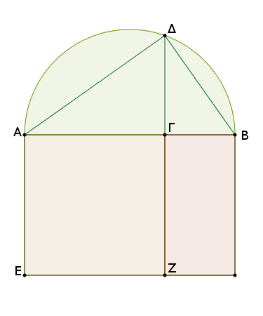
ἐπεὶ οὖν διὰ τὸ ἰσογώνιον εἶναι τὸ ΔΑΒ τρίγωνον τῷ ΔΑΓ τριγώνῳ ἐστὶν ὡς ἡ ΒΑ πρὸς τὴν ΑΔ, οὕτως ἡ ΔΑ πρὸς τὴν ΑΓ, τὸ ἄρα ὑπὸ τῶν ΒΑ, ΑΓ ἴσον ἐστὶ τῷ ἀπὸ τῆς ΑΔ.
καὶ ἐπεί ἐστιν ὡς ἡ ΑΒ πρὸς τὴν ΒΓ, οὕτως τὸ ΕΒ πρὸς τὸ ΒΖ, καί ἐστι τὸ μὲν ΕΒ τὸ ὑπὸ τῶν ΒΑ, ΑΓ· ἴση γὰρ ἡ ΕΑ τῇ ΑΓ· τὸ δὲ ΒΖ τὸ ὑπὸ τῶν ΑΓ, ΓΒ, ὡς ἄρα ἡ ΑΒ πρὸς τὴν ΒΓ, οὕτως τὸ ὑπὸ τῶν ΒΑ, ΑΓ πρὸς τὸ ὑπὸ τῶν ΑΓ, ΓΒ.
καί ἐστι τὸ μὲν ὑπὸ τῶν ΒΑ, ΑΓ ἴσον τῷ ἀπὸ τῆς ΑΔ, τὸ δὲ ὑπὸ τῶν ΑΓΒ ἴσον τῷ ἀπὸ τῆς ΔΓ· ἡ γὰρ ΔΓ κάθετος τῶν τῆς βάσεως τμημάτων τῶν ΑΓ, ΓΒ μέση ἀνάλογόν ἐστι διὰ τὸ ὀρθὴν εἶναι τὴν ὑπὸ ΑΔΒ. ὡς ἄρα ἡ ΑΒ πρὸς τὴν ΒΓ, οὕτως τὸ ἀπὸ τῆς ΑΔ πρὸς τὸ ἀπὸ τῆς ΔΓ· ὅπερ ἔδει δεῖξαι.
Ὀκτάεδρον συστήσασθαι καὶ σφαίρᾳ περιλαβεῖν, ᾗ καὶ τὰ πρότερα, καὶ δεῖξαι, ὅτι ἡ τῆς σφαίρας διάμετρος δυνάμει διπλασία ἐστὶ τῆς πλευρᾶς τοῦ ὀκταέδρου.
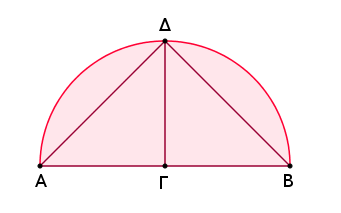
Ἐκκείσθω ἡ τῆς δοθείσης σφαίρας διάμετρος ἡ ΑΒ, καὶ τετμήσθω δίχα κατὰ τὸ Γ, καὶ γεγράφθω ἐπὶ τῆς ΑΒ ἡμικύκλιον τὸ ΑΔΒ, καὶ ἤχθω ἀπὸ τοῦ Γ τῇ ΑΒ πρὸς ὀρθὰς ἡ ΓΔ, καὶ ἐπεζεύχθω ἡ ΔΒ, καὶ ἐκκείσθω τετράγωνον τὸ ΕΖΗΘ ἴσην ἔχον ἑκάστην τῶν πλευρῶν τῇ ΔΒ, καὶ ἐπεζεύχθωσαν αἱ ΘΖ, ΕΗ, καὶ ἀνεστάτω ἀπὸ τοῦ Κ σημείου τῷ τοῦ ΕΖΗΘ τετραγώνου ἐπιπέδῳ πρὸς ὀρθὰς εὐθεῖα ἡ ΚΛ καὶ διήχθω ἐπὶ τὰ ἕτερα μέρη τοῦ ἐπιπέδου ὡς ἡ ΚΜ, καὶ ἀφῃρήσθω ἀφ' ἑκατέρας τῶν ΚΛ, ΚΜ μιᾷ τῶν ΕΚ, ΖΚ, ΗΚ, ΘΚ ἴση ἑκατέρα τῶν ΚΛ, ΚΜ, καὶ ἐπεζεύχθωσαν αἱ ΛΕ, ΛΖ, ΛΗ, ΛΘ, ΜΕ, ΜΖ, ΜΗ, ΜΘ.
καὶ ἐπεὶ ἴση ἐστὶν ἡ ΚΕ τῇ ΚΘ, καί ἐστιν ὀρθὴ ἡ ὑπὸ ΕΚΘ γωνία, τὸ ἄρα ἀπὸ τῆς ΘΕ διπλάσιόν ἐστι τοῦ ἀπὸ τῆς ΕΚ. πάλιν, ἐπεὶ ἴση ἐστὶν ἡ ΛΚ τῇ ΚΕ, καί ἐστιν ὀρθὴ ἡ ὑπὸ ΛΚΕ γωνία, τὸ ἄρα ἀπὸ τῆς ΕΛ διπλάσιόν ἐστι τοῦ ἀπὸ ΕΚ.
ἐδείχθη δὲ καὶ τὸ ἀπὸ τῆς ΘΕ διπλάσιον τοῦ ἀπὸ τῆς ΕΚ· τὸ ἄρα ἀπὸ τῆς ΛΕ ἴσον ἐστὶ τῷ ἀπὸ τῆς ΕΘ· ἴση ἄρα ἐστὶν ἡ ΛΕ τῇ ΕΘ. διὰ τὰ αὐτὰ δὴ καὶ ἡ ΛΘ τῇ ΘΕ ἐστιν ἴση· ἰσόπλευρον ἄρα ἐστὶ τὸ ΛΕΘ τρίγωνον. ὁμοίως δὴ δείξομεν, ὅτι καὶ ἕκαστον τῶν λοιπῶν τριγώνων, ὧν βάσεις μέν εἰσιν αἱ τοῦ ΕΖΗΘ τετραγώνου πλευραί, κορυφαὶ δὲ τὰ Λ, Μ σημεῖα, ἰσόπλευρόν ἐστιν· ὀκτάεδρον ἄρα συνέσταται ὑπὸ ὀκτὼ τριγώνων ἰσοπλεύρων περιεχόμενον.
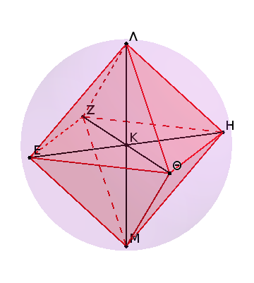
Δεῖ δὴ αὐτὸ καὶ σφαίρᾳ περιλαβεῖν τῇ δοθείσῃ καὶ δεῖξαι, ὅτι ἡ τῆς σφαίρας διάμετρος δυνάμει διπλασίων ἐστὶ τῆς τοῦ ὀκταέδρου πλευρᾶς.
Ἐπεὶ γὰρ αἱ τρεῖς αἱ ΛΚ, ΚΜ, ΚΕ ἴσαι ἀλλήλαις εἰσίν, τὸ ἄρα ἐπὶ τῆς ΛΜ γραφόμενον ἡμικύκλιον ἥξει καὶ διὰ τοῦ Ε. καὶ διὰ τὰ αὐτά, ἐὰν μενούσης τῆς ΛΜ περιενεχθὲν τὸ ἡμικύκλιον εἰς τὸ αὐτὸ ἀποκατασταθῇ, ὅθεν ἤρξατο φέρεσθαι, ἥξει καὶ διὰ τῶν Ζ, Η, Θ σημείων, καὶ ἔσται σφαίρᾳ περιειλημμένον τὸ ὀκτάεδρον. λέγω δή, ὅτι καὶ τῇ δοθείσῃ.
ἐπεὶ γὰρ ἴση ἐστὶν ἡ ΛΚ τῇ ΚΜ, κοινὴ δὲ ἡ ΚΕ, καὶ γωνίας ὀρθὰς περιέχουσιν, βάσις ἄρα ἡ ΛΕ βάσει τῇ ΕΜ ἐστιν ἴση. καὶ ἐπεὶ ὀρθή ἐστιν ἡ ὑπὸ ΛΕΜ γωνία· ἐν ἡμικυκλίῳ γάρ· τὸ ἄρα ἀπὸ τῆς ΛΜ διπλάσιόν ἐστι τοῦ ἀπὸ τῆς ΛΕ. πάλιν, ἐπεὶ ἴση ἐστὶν ἡ ΑΓ τῇ ΓΒ, διπλασία ἐστὶν ἡ ΑΒ τῆς ΒΓ. ὡς δὲ ἡ ΑΒ πρὸς τὴν ΒΓ, οὕτως τὸ ἀπὸ τῆς ΑΒ πρὸς τὸ ἀπὸ τῆς ΒΔ· διπλάσιον ἄρα ἐστὶ τὸ ἀπὸ τῆς ΑΒ τοῦ ἀπὸ τῆς ΒΔ.
ἐδείχθη δὲ καὶ τὸ ἀπὸ τῆς ΛΜ διπλάσιον τοῦ ἀπὸ τῆς ΛΕ. καί ἐστιν ἴσον τὸ ἀπὸ τῆς ΔΒ τῷ ἀπὸ τῆς ΛΕ· ἴση γὰρ κεῖται ἡ ΕΘ τῇ ΔΒ. ἴσον ἄρα καὶ τὸ ἀπὸ τῆς ΑΒ τῷ ἀπὸ τῆς ΛΜ· ἴση ἄρα ἡ ΑΒ τῇ ΛΜ. καί ἐστιν ἡ ΑΒ ἡ τῆς δοθείσης σφαίρας διάμετρος· ἡ ΛΜ ἄρα ἴση ἐστὶ τῇ τῆς δοθείσης σφαίρας διαμέτρῳ.
Περιείληπται ἄρα τὸ ὀκτάεδρον τῇ δοθείσῃ σφαίρᾳ. καὶ συναποδέδεικται, ὅτι ἡ τῆς σφαίρας διάμετρος δυνάμει διπλασίων ἐστὶ τῆς τοῦ ὀκταέδρου πλευρᾶς· ὅπερ ἔδει δεῖξαι.
Κύβον συστήσασθαι καὶ σφαίρᾳ περιλαβεῖν, ᾗ καὶ τὴν πυραμίδα, καὶ δεῖξαι, ὅτι ἡ τῆς σφαίρας διάμετρος δυνάμει τριπλασίων ἐστὶ τῆς τοῦ κύβου πλευρᾶς.
Ἐκκείσθω ἡ τῆς δοθείσης σφαίρας διάμετρος ἡ ΑΒ καὶ τετμήσθω κατὰ τὸ Γ ὥστε διπλῆν εἶναι τὴν ΑΓ τῆς ΓΒ, καὶ γεγράφθω ἐπὶ τῆς ΑΒ ἡμικύκλιον τὸ ΑΔΒ, καὶ ἀπὸ τοῦ Γ τῇ ΑΒ πρὸς ὀρθὰς ἤχθω ἡ ΓΔ, καὶ ἐπεζεύχθω ἡ ΔΒ, καὶ ἐκκείσθω τετράγωνον τὸ ΕΖΗΘ ἴσην ἔχον τὴν πλευρὰν τῇ ΔΒ, καὶ ἀπὸ τῶν Ε, Ζ, Η, Θ τῷ τοῦ ΕΖΗΘ τετραγώνου ἐπιπέδῳ πρὸς ὀρθὰς ἤχθωσαν αἱ ΕΚ, ΖΛ, ΗΜ, ΘΝ, καὶ ἀφῃρήσθω ἀπὸ ἑκάστης τῶν ΕΚ, ΖΛ, ΗΜ, ΘΝ μιᾷ τῶν ΕΖ, ΖΗ, ΗΘ, ΘΕ ἴση ἑκάστη τῶν ΕΚ, ΖΛ, ΗΜ, ΘΝ, καὶ ἐπεζεύχθωσαν αἱ ΚΛ, ΛΜ, ΜΝ, ΝΚ· κύβος ἄρα συνέσταται ὁ ΖΝ ὑπὸ ἓξ τετραγώνων ἴσων περιεχόμενος. δεῖ δὴ αὐτὸν καὶ σφαίρᾳ περιλαβεῖν τῇ δοθείσῃ καὶ δεῖξαι, ὅτι ἡ τῆς σφαίρας διάμετρος δυνάμει τριπλασία ἐστὶ τῆς πλευρᾶς τοῦ κύβου.
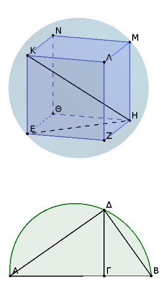
Ἐπεζεύχθωσαν γὰρ αἱ ΚΗ, ΕΗ. καὶ ἐπεὶ ὀρθή ἐστιν ἡ ὑπὸ ΚΕΗ γωνία διὰ τὸ καὶ τὴν ΚΕ ὀρθὴν εἶναι πρὸς τὸ ΕΗ ἐπίπεδον δηλαδὴ καὶ πρὸς τὴν ΕΗ εὐθεῖαν, τὸ ἄρα ἐπὶ τῆς ΚΗ γραφόμενον ἡμικύκλιον ἥξει καὶ διὰ τοῦ Ε σημείου.
πάλιν, ἐπεὶ ἡ ΗΖ ὀρθή ἐστι πρὸς ἑκατέραν τῶν ΖΛ, ΖΕ, καὶ πρὸς τὸ ΖΚ ἄρα ἐπίπεδον ὀρθή ἐστιν ἡ ΗΖ· ὥστε καὶ ἐὰν ἐπιζεύξωμεν τὴν ΖΚ, ἡ ΗΖ ὀρθὴ ἔσται καὶ πρὸς τὴν ΖΚ· καὶ διὰ τοῦτο πάλιν τὸ ἐπὶ τῆς ΗΚ γραφόμενον ἡμικύκλιον ἥξει καὶ διὰ τοῦ Ζ.
ὁμοίως καὶ διὰ τῶν λοιπῶν τοῦ κύβου σημείων ἥξει. ἐὰν δὴ μενούσης τῆς ΚΗ περιενεχθὲν τὸ ἡμικύκλιον εἰς τὸ αὐτὸ ἀποκατασταθῇ, ὅθεν ἤρξατο φέρεσθαι, ἔσται σφαίρᾳ περιειλημμένος ὁ κύβος. λέγω δή, ὅτι καὶ τῇ δοθείσῃ.
ἐπεὶ γὰρ ἴση ἐστὶν ἡ ΗΖ τῇ ΖΕ, καί ἐστιν ὀρθὴ ἡ πρὸς τῷ Ζ γωνία, τὸ ἄρα ἀπὸ τῆς ΕΗ διπλάσιόν ἐστι τοῦ ἀπὸ τῆς ΕΖ. ἴση δὲ ἡ ΕΖ τῇ ΕΚ· τὸ ἄρα ἀπὸ τῆς ΕΗ διπλάσιόν ἐστι τοῦ ἀπὸ τῆς ΕΚ· ὥστε τὰ ἀπὸ τῶν ΗΕ, ΕΚ, τουτέστι τὸ ἀπὸ τῆς ΗΚ, τριπλάσιόν ἐστι τοῦ ἀπὸ τῆς ΕΚ.
καὶ ἐπεὶ τριπλασίων ἐστὶν ἡ ΑΒ τῆς ΒΓ, ὡς δὲ ἡ ΑΒ πρὸς τὴν ΒΓ, οὕτως τὸ ἀπὸ τῆς ΑΒ πρὸς τὸ ἀπὸ τῆς ΒΔ, τριπλάσιον ἄρα τὸ ἀπὸ τῆς ΑΒ τοῦ ἀπὸ τῆς ΒΔ. ἐδείχθη δὲ καὶ τὸ ἀπὸ τῆς ΗΚ τοῦ ἀπὸ τῆς ΚΕ τριπλάσιον. καὶ κεῖται ἴση ἡ ΚΕ τῇ ΔΒ· ἴση ἄρα καὶ ἡ ΚΗ τῇ ΑΒ. καί ἐστιν ἡ ΑΒ τῆς δοθείσης σφαίρας διάμετρος· καὶ ἡ ΚΗ ἄρα ἴση ἐστὶ τῇ τῆς δοθείσης σφαίρας διαμέτρῳ.
Τῇ δοθείσῃ ἄρα σφαίρᾳ περιείληπται ὁ κύβος· καὶ συναποδέδεικται, ὅτι ἡ τῆς σφαίρας διάμετρος δυνάμει τριπλασίων ἐστὶ τῆς τοῦ κύβου πλευρᾶς· ὅπερ ἔδει δεῖξαι.
Εἰκοσάεδρον συστήσασθαι καὶ σφαίρᾳ περιλαβεῖν, ᾗ καὶ τὰ προειρημένα σχήματα, καὶ δεῖξαι, ὅτι ἡ τοῦ εἰκοσαέδρου πλευρὰ ἄλογός ἐστιν ἡ καλουμένη ἐλάττων.
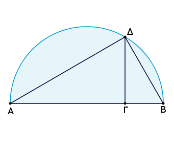
Ἐκκείσθω ἡ τῆς δοθείσης σφαίρας διάμετρος ἡ ΑΒ καὶ τετμήσθω κατὰ τὸ Γ ὥστε τετραπλῆν εἶναι τὴν ΑΓ τῆς ΓΒ, καὶ γεγράφθω ἐπὶ τῆς ΑΒ ἡμικύκλιον τὸ ΑΔΒ, καὶ ἤχθω ἀπὸ τοῦ Γ τῇ ΑΒ πρὸς ὀρθὰς γωνίας εὐθεῖα γραμμὴ ἡ ΓΔ, καὶ ἐπεζεύχθω ἡ ΔΒ, καὶ ἐκκείσθω κύκλος ὁ ΕΖΗΘΚ, οὗ ἡ ἐκ τοῦ κέντρου ἴση ἔστω τῇ ΔΒ, καὶ ἐγγεγράφθω εἰς τὸν ΕΖΗΘΚ κύκλον πεντάγωνον ἰσόπλευρόν τε καὶ ἰσογώνιον τὸ ΕΖΗΘΚ, καὶ τετμήσθωσαν αἱ ΕΖ, ΖΗ, ΗΘ, ΘΚ, ΚΕ περιφέρειαι δίχα κατὰ τὰ Λ, Μ, Ν, Ξ, Ο σημεῖα, καὶ ἐπεζεύχθωσαν αἱ ΛΜ, ΜΝ, ΝΞ, ΞΟ, ΟΛ, ΕΟ.
ἰσόπλευρον ἄρα ἐστὶ καὶ τὸ ΛΜΝΞΟ πεντάγωνον, καὶ δεκαγώνου ἡ ΕΟ εὐθεῖα. καὶ ἀνεστάτωσαν ἀπὸ τῶν Ε, Ζ, Η, Θ, Κ σημείων τῷ τοῦ κύκλου ἐπιπέδῳ πρὸς ὀρθὰς γωνίας εὐθεῖαι αἱ ΕΠ, ΖΡ, ΗΣ, ΘΤ, ΚΥ ἴσαι οὖσαι τῇ ἐκ τοῦ κέντρου τοῦ ΕΖΗΘΚ κύκλου, καὶ ἐπεζεύχθωσαν αἱ ΠΡ, ΡΣ, ΣΤ, ΤΥ, ΥΠ, ΠΛ, ΛΡ, ΡΜ, ΜΣ, ΣΝ, ΝΤ, ΤΞ, ΞΥ, ΥΟ, ΟΠ.
καὶ ἐπεὶ ἑκατέρα τῶν ΕΠ, ΚΥ τῷ αὐτῷ ἐπιπέδῳ πρὸς ὀρθάς ἐστιν, παράλληλος ἄρα ἐστὶν ἡ ΕΠ τῇ ΚΥ. ἔστι δὲ αὐτῇ καὶ ἴση· αἱ δὲ τὰς ἴσας τε καὶ παραλλήλους ἐπιζευγνύουσαι ἐπὶ τὰ αὐτὰ μέρη εὐθεῖαι ἴσαι τε καὶ παράλληλοί εἰσιν. ἡ ΠΥ ἄρα τῇ ΕΚ ἴση τε καὶ παράλληλός ἐστιν. πενταγώνου δὲ ἰσοπλεύρου ἡ ΕΚ· πενταγώνου ἄρα ἰσοπλεύρου καὶ ἡ ΠΥ τοῦ εἰς τὸν ΕΖΗΘΚ κύκλον ἐγγραφομένου. διὰ τὰ αὐτὰ δὴ καὶ ἑκάστη τῶν ΠΡ, ΡΣ, ΣΤ, ΤΥ πενταγώνου ἐστὶν ἰσοπλεύρου τοῦ εἰς τὸν ΕΖΗΘΚ κύκλον ἐγγραφομένου· ἰσόπλευρον ἄρα τὸ ΠΡΣΤΥ πεντάγωνον.
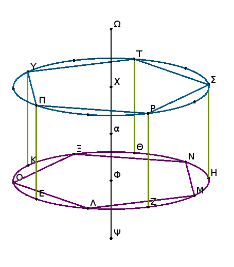
καὶ ἐπεὶ ἑξαγώνου μέν ἐστιν ἡ ΠΕ, δεκαγώνου δὲ ἡ ΕΟ, καί ἐστιν ὀρθὴ ἡ ὑπὸ ΠΕΟ, πενταγώνου ἄρα ἐστὶν ἡ ΠΟ· ἡ γὰρ τοῦ πενταγώνου πλευρὰ δύναται τήν τε τοῦ ἑξαγώνου καὶ τὴν τοῦ δεκαγώνου τῶν εἰς τὸν αὐτὸν κύκλον ἐγγραφομένων. διὰ τὰ αὐτὰ δὴ καὶ ἡ ΟΥ πενταγώνου ἐστὶ πλευρά. ἔστι δὲ καὶ ἡ ΠΥ πενταγώνου· ἰσόπλευρον ἄρα ἐστὶ τὸ ΠΟΥ τρίγωνον. διὰ τὰ αὐτὰ δὴ καὶ ἕκαστον τῶν ΠΛΡ, ΡΜΣ, ΣΝΤ, ΤΞΥ ἰσόπλευρόν ἐστιν. καὶ ἐπεὶ πενταγώνου ἐδείχθη ἑκατέρα τῶν ΠΛ, ΠΟ, ἔστι δὲ καὶ ἡ ΛΟ πενταγώνου, ἰσόπλευρον ἄρα ἐστὶ τὸ ΠΛΟ τρίγωνον. διὰ τὰ αὐτὰ δὴ καὶ ἕκαστον τῶν ΛΡΜ, ΜΣΝ, ΝΤΞ, ΞΥΟ τριγώνων ἰσόπλευρόν ἐστιν.
εἰλήφθω τὸ κέντρον τοῦ ΕΖΗ ΘΚ κύκλου τὸ Φ σημεῖον· καὶ ἀπὸ τοῦ Φ τῷ τοῦ κύκλου ἐπιπέδῳ πρὸς ὀρθὰς ἀνεστάτω ἡ ΦΩ, καὶ ἐκβεβλήσθω ἐπὶ τὰ ἕτερα μέρη ὡς ἡ ΦΨ, καὶ ἀφῃρήσθω ἑξαγώνου μὲν ἡ ΦΧ, δεκαγώνου δὲ ἑκατέρα τῶν ΦΨ, ΧΩ, καὶ ἐπεζεύχθωσαν αἱ ΠΩ, ΠΧ, ΥΩ, ΕΦ, ΛΦ, ΛΨ, ΨΜ.
καὶ ἐπεὶ ἑκατέρα τῶν ΦΧ, ΠΕ τῷ τοῦ κύκλου ἐπιπέδῳ πρὸς ὀρθάς ἐστιν, παράλληλος ἄρα ἐστὶν ἡ ΦΧ τῇ ΠΕ. εἰσὶ δὲ καὶ ἴσαι· καὶ αἱ ΕΦ, ΠΧ ἄρα ἴσαι τε καὶ παράλληλοί εἰσιν. ἑξαγώνου δὲ ἡ ΕΦ· ἑξαγώνου ἄρα καὶ ἡ ΠΧ. καὶ ἐπεὶ ἑξαγώνου μέν ἐστιν ἡ ΠΧ, δεκαγώνου δὲ ἡ ΧΩ, καὶ ὀρθή ἐστιν ἡ ὑπὸ ΠΧΩ γωνία, πενταγώνου ἄρα ἐστὶν ἡ ΠΩ. διὰ τὰ αὐτὰ δὴ καὶ ἡ ΥΩ πενταγώνου ἐστίν, ἐπειδήπερ, ἐὰν ἐπιζεύξωμεν τὰς ΦΚ, ΧΥ, ἴσαι καὶ ἀπεναντίον ἔσονται, καί ἐστιν ἡ ΦΚ ἐκ τοῦ κέντρου οὖσα ἑξαγώνου· ἑξαγώνου ἄρα καὶ ἡ ΧΥ. δεκαγώνου δὲ ἡ ΧΩ, καὶ ὀρθὴ ἡ ὑπὸ ΥΧΩ· πενταγώνου ἄρα ἡ ΥΩ. ἔστι δὲ καὶ ἡ ΠΥ πενταγώνου· ἰσόπλευρον ἄρα ἐστὶ τὸ ΠΥΩ τρίγωνον. διὰ τὰ αὐτὰ δὴ καὶ ἕκαστον τῶν λοιπῶν τριγώνων, ὧν βάσεις μέν εἰσιν αἱ ΠΡ, ΡΣ, ΣΤ, ΤΥ εὐθεῖαι, κορυφὴ δὲ τὸ Ω σημεῖον, ἰσόπλευρόν ἐστιν.
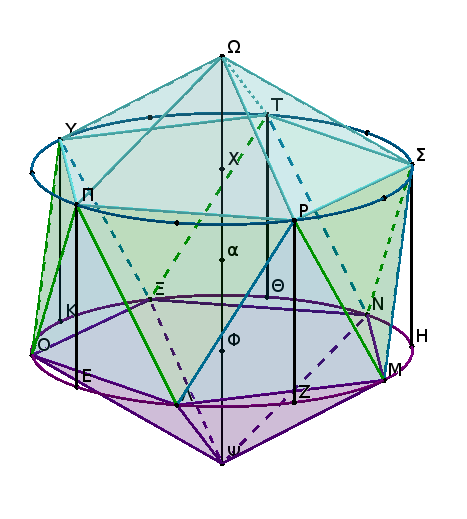
πάλιν, ἐπεὶ ἑξαγώνου μὲν ἡ ΦΛ, δεκαγώνου δὲ ἡ ΦΨ, καὶ ὀρθή ἐστιν ἡ ὑπὸ ΛΦΨ γωνία, πενταγώνου ἄρα ἐστὶν ἡ ΛΨ. διὰ τὰ αὐτὰ δὴ ἐὰν ἐπιζεύξωμεν τὴν ΜΦ οὖσαν ἑξαγώνου, συνάγεται καὶ ἡ ΜΨ πενταγώνου. ἔστι δὲ καὶ ἡ ΛΜ πενταγώνου· ἰσόπλευρον ἄρα ἐστὶ τὸ ΛΜΨ τρίγωνον. ὁμοίως δὴ δειχθήσεται, ὅτι καὶ ἕκαστον τῶν λοιπῶν τριγώνων, ὧν βάσεις μέν εἰσιν αἱ ΜΝ, ΝΞ, ΞΟ, ΟΛ, κορυφὴ δὲ τὸ Ψ σημεῖον, ἰσόπλευρόν ἐστιν. συνέσταται ἄρα εἰκοσάεδρον ὑπὸ εἴκοσι τριγώνων ἰσοπλεύρων περιεχόμενον.
Δεῖ δὴ αὐτὸ καὶ σφαίρᾳ περιλαβεῖν τῇ δοθείσῃ καὶ δεῖξαι, ὅτι ἡ τοῦ εἰκοσαέδρου πλευρὰ ἄλογός ἐστιν ἡ καλουμένη ἐλάσσων.
Ἐπεὶ γὰρ ἑξαγώνου ἐστὶν ἡ ΦΧ, δεκαγώνου δὲ ἡ ΧΩ, ἡ ΦΩ ἄρα ἄκρον καὶ μέσον λόγον τέμηται κατὰ τὸ Χ, καὶ τὸ μεῖζον αὐτῆς τμῆμά ἐστιν ἡ ΦΧ· ἔστιν ἄρα ὡς ἡ ΩΦ πρὸς τὴν ΦΧ, οὕτως ἡ ΦΧ πρὸς τὴν ΧΩ. ἴση δὲ ἡ μὲν ΦΧ τῇ ΦΕ, ἡ δὲ ΧΩ τῇ ΦΨ· ἔστιν ἄρα ὡς ἡ ΩΦ πρὸς τὴν ΦΕ, οὕτως ἡ ΕΦ πρὸς τὴν ΦΨ.
καί εἰσιν ὀρθαὶ αἱ ὑπὸ ΩΦΕ, ΕΦΨ γωνίαι· ἐὰν ἄρα ἐπιζεύξωμεν τὴν ΕΩ εὐθεῖαν, ὀρθὴ ἔσται ἡ ὑπὸ ΨΕΩ γωνία διὰ τὴν ὁμοιότητα τῶν ΨΕΩ, ΦΕΩ τριγώνων. διὰ τὰ αὐτὰ δὴ ἐπεί ἐστιν ὡς ἡ ΩΦ πρὸς τὴν ΦΧ, οὕτως ἡ ΦΧ πρὸς τὴν ΧΩ, ἴση δὲ ἡ μὲν ΩΦ τῇ ΨΧ, ἡ δὲ ΦΧ τῇ ΧΠ, ἔστιν ἄρα ὡς ἡ ΨΧ πρὸς τὴν ΧΠ, οὕτως ἡ ΠΧ πρὸς τὴν ΧΩ. καὶ διὰ τοῦτο πάλιν ἐὰν ἐπιζεύξωμεν τὴν ΠΨ, ὀρθὴ ἔσται ἡ πρὸς τῷ Π γωνία· τὸ ἄρα ἐπὶ τῆς ΨΩ γραφόμενον ἡμικύκλιον ἥξει καὶ διὰ τοῦ Π. καὶ ἐὰν μενούσης τῆς ΨΩ περιενεχθὲν τὸ ἡμικύκλιον εἰς τὸ αὐτὸ πάλιν ἀποκατασταθῇ, ὅθεν ἤρξατο φέρεσθαι, ἥξει καὶ διὰ τοῦ Π καὶ τῶν λοιπῶν σημείων τοῦ εἰκοσαέδρου, καὶ ἔσται σφαίρᾳ περιειλημμένον τὸ εἰκοσάεδρον.
λέγω δή, ὅτι καὶ τῇ δοθείσῃ. τετμήσθω γὰρ ἡ ΦΧ δίχα κατὰ τὸ α. καὶ ἐπεὶ εὐθεῖα γραμμὴ ἡ ΦΩ ἄκρον καὶ μέσον λόγον τέτμηται κατὰ τὸ Χ, καὶ τὸ ἔλασσον αὐτῆς τμῆμά ἐστιν ἡ ΩΧ, ἡ ἄρα ΩΧ προσλαβοῦσα τὴν ἡμίσειαν τοῦ μείζονος τμήματος τὴν Χα πενταπλάσιον δύναται τοῦ ἀπὸ τῆς ἡμισείας τοῦ μείζονος τμήματος· πενταπλάσιον ἄρα ἐστὶ τὸ ἀπὸ τῆς Ωα τοῦ ἀπὸ τῆς αΧ. καί ἐστι τῆς μὲν Ωα διπλῆ ἡ ΩΨ, τῆς δὲ αΧ διπλῆ ἡ ΦΧ· πενταπλάσιον ἄρα ἐστὶ τὸ ἀπὸ τῆς ΩΨ τοῦ ἀπὸ τῆς ΧΦ. καὶ ἐπεὶ τετραπλῆ ἐστιν ἡ ΑΓ τῆς ΓΒ, πενταπλῆ ἄρα ἐστὶν ἡ ΑΒ τῆς ΒΓ. ὡς δὲ ἡ ΑΒ πρὸς τὴν ΒΓ, οὕτως τὸ ἀπὸ τῆς ΑΒ πρὸς τὸ ἀπὸ τῆς ΒΔ· πενταπλάσιον ἄρα ἐστὶ τὸ ἀπὸ τῆς ΑΒ τοῦ ἀπὸ τῆς ΒΔ. ἐδείχθη δὲ καὶ τὸ ἀπὸ τῆς ΩΨ πενταπλάσιον τοῦ ἀπὸ τῆς ΦΧ. καί ἐστιν ἴση ἡ ΔΒ τῇ ΦΧ· ἑκατέρα γὰρ αὐτῶν ἴση ἐστὶ τῇ ἐκ τοῦ κέντρου τοῦ ΕΖΗΘΚ κύκλου· ἴση ἄρα καὶ ἡ ΑΒ τῇ ΨΩ. καί ἐστιν ἡ ΑΒ ἡ τῆς δοθείσης σφαίρας διάμετρος· καὶ ἡ ΨΩ ἄρα ἴση ἐστὶ τῇ τῆς δοθείσης σφαίρας διαμέτρῳ. τῇ ἄρα δοθείσῃ σφαίρᾳ περιείληπται τὸ εἰκοσάεδρον.
Λέγω δή, ὅτι ἡ τοῦ εἰκοσαέδρου πλευρὰ ἄλογός ἐστιν ἡ καλουμένη ἐλάττων. ἐπεὶ γὰρ ῥητή ἐστιν ἡ τῆς σφαίρας διάμετρος, καί ἐστι δυνάμει πενταπλασίων τῆς ἐκ τοῦ κέντρου τοῦ ΕΖΗΘΚ κύκλου, ῥητὴ ἄρα ἐστὶ καὶ ἡ ἐκ τοῦ κέντρου τοῦ ΕΖΗΘΚ κύκλου· ὥστε καὶ ἡ διάμετρος αὐτοῦ ῥητή ἐστιν. ἐὰν δὲ εἰς κύκλον ῥητὴν ἔχοντα τὴν διάμετρον πεντάγωνον ἰσόπλευρον ἐγγραφῇ, ἡ τοῦ πενταγώνου πλευρὰ ἄλογός ἐστιν ἡ καλουμένη ἐλάττων. ἡ δὲ τοῦ ΕΖΗΘΚ πενταγώνου πλευρὰ ἡ τοῦ εἰκοσαέδρου ἐστίν. ἡ ἄρα τοῦ εἰκοσαέδρου πλευρὰ ἄλογός ἐστιν ἡ καλουμένη ἐλάττων.
ΠόρισμαἘκ δὴ τούτου φανερόν, ὅτι ἡ τῆς σφαίρας διάμετρος δυνάμει πενταπλασίων ἐστὶ τῆς ἐκ τοῦ κέντρου τοῦ κύκλου, ἀφ' οὗ τὸ εἰκοσάεδρον ἀναγέγραπται, καὶ ὅτι ἡ τῆς σφαίρας διάμετρος σύγκειται ἔκ τε τῆς τοῦ ἑξαγώνου καὶ δύο τῶν τοῦ δεκαγώνου τῶν εἰς τὸν αὐτὸν κύκλον ἐγγραφομένων. ὅπερ ἔδει δεῖξαι.
Δωδεκάεδρον συστήσασθαι καὶ σφαίρᾳ περιλαβεῖν, ᾗ καὶ τὰ προειρημένα σχήματα, καὶ δεῖξαι, ὅτι ἡ τοῦ δωδεκαέδρου πλευρὰ ἄλογός ἐστιν ἡ καλουμένη ἀποτομή.
Ἐκκείσθωσαν τοῦ προειρημένου κύβου δύο ἐπίπεδα πρὸς ὀρθὰς ἀλλήλοις τὰ ΑΒΓΔ, ΓΒΕΖ, καὶ τετμήσθω ἑκάστη τῶν ΑΒ, ΒΓ, ΓΔ, ΔΑ, ΕΖ, ΕΒ, ΖΓ πλευρῶν δίχα κατὰ τὰ Η, Θ, Κ, Λ, Μ, Ν, Ξ, καὶ ἐπεζεύχθωσαν αἱ ΗΚ, ΘΛ, ΜΘ, ΝΞ, καὶ τετμήσθω ἑκάστη τῶν ΝΟ, ΟΞ, ΘΠ ἄκρον καὶ μέσον λόγον κατὰ τὰ Ρ, Σ, Τ σημεῖα, καὶ ἔστω αὐτῶν μείζονα τμήματα τὰ ΡΟ, ΟΣ, ΤΠ, καὶ ἀνεστάτωσαν ἀπὸ τῶν Ρ, Σ, Τ σημείων τοῖς τοῦ κύβου ἐπιπέδοις πρὸς ὀρθὰς ἐπὶ τὰ ἐκτὸς μέρη τοῦ κύβου αἱ ΡΥ, ΣΦ, ΤΧ, καὶ κείσθωσαν ἴσαι ταῖς ΡΟ, ΟΣ, ΤΠ, καὶ ἐπεζεύχθωσαν αἱ ΥΒ, ΒΧ, ΧΓ, ΓΦ, ΦΥ. λέγω, ὅτι τὸ ΥΒΧΓΦ πεντάγωνον ἰσόπλευρόν τε καὶ ἐν ἑνὶ ἐπιπέδῳ καὶ ἔτι ἰσογώνιόν ἐστιν.
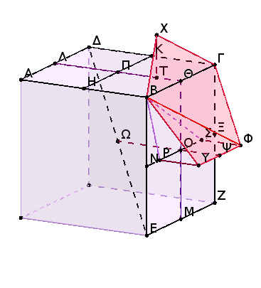
ἐπεζεύχθωσαν γὰρ αἱ ΡΒ, ΣΒ, ΦΒ. καὶ ἐπεὶ εὐθεῖα ἡ ΝΟ ἄκρον καὶ μέσον λόγον τέτμηται κατὰ τὸ Ρ, καὶ τὸ μεῖζον τμῆμά ἐστιν ἡ ΡΟ, τὰ ἄρα ἀπὸ τῶν ΟΝ, ΝΡ τριπλάσιά ἐστι τοῦ ἀπὸ τῆς ΡΟ. ἴση δὲ ἡ μὲν ΟΝ τῇ ΝΒ, ἡ δὲ ΟΡ τῇ ΡΥ· τὰ ἄρα ἀπὸ τῶν ΒΝ, ΝΡ τριπλάσιά ἐστι τοῦ ἀπὸ τῆς ΡΥ. τοῖς δὲ ἀπὸ τῶν ΒΝ, ΝΡ τὸ ἀπὸ τῆς ΒΡ ἐστιν ἴσον· τὸ ἄρα ἀπὸ τῆς ΒΡ τριπλάσιόν ἐστι τοῦ ἀπὸ τῆς ΡΥ· ὥστε τὰ ἀπὸ τῶν ΒΡ, ΡΥ τετραπλάσιά ἐστι τοῦ ἀπὸ τῆς ΡΥ. τοῖς δὲ ἀπὸ τῶν ΒΡ, ΡΥ ἴσον ἐστὶ τὸ ἀπὸ τῆς ΒΥ· τὸ ἄρα ἀπὸ τῆς ΒΥ τετραπλάσιόν ἐστι τοῦ ἀπὸ τῆς ΥΡ· διπλῆ ἄρα ἐστὶν ἡ ΒΥ τῆς ΡΥ. ἔστι δὲ καὶ ἡ ΦΥ τῆς ΥΡ διπλῆ, ἐπειδήπερ καὶ ἡ ΣΡ τῆς ΟΡ, τουτέστι τῆς ΡΥ, ἐστι διπλῆ· ἴση ἄρα ἡ ΒΥ τῇ ΥΦ. ὁμοίως δὴ δειχθήσεται, ὅτι καὶ ἑκάστη τῶν ΒΧ, ΧΓ, ΓΦ ἑκατέρᾳ τῶν ΒΥ, ΥΦ ἐστιν ἴση. ἰσόπλευρον ἄρα ἐστὶ τὸ ΒΥΦΓΧ πεντάγωνον.
λέγω δή, ὅτι καὶ ἐν ἑνί ἐστιν ἐπιπέδῳ. ἤχθω γὰρ ἀπὸ τοῦ Ο ἑκατέρᾳ τῶν ΡΥ, ΣΦ παράλληλος ἐπὶ τὰ ἐκτὸς τοῦ κύβου μέρη ἡ ΟΨ, καὶ ἐπεζεύχθωσαν αἱ ΨΘ, ΘΧ· λέγω, ὅτι ἡ ΨΘΧ εὐθεῖά ἐστιν.
ἐπεὶ γὰρ ἡ ΘΠ ἄκρον καὶ μέσον λόγον τέτμηται κατὰ τὸ Τ, καὶ τὸ μεῖζον αὐτῆς τμῆμά ἐστιν ἡ ΠΤ, ἔστιν ἄρα ὡς ἡ ΘΠ πρὸς τὴν ΠΤ, οὕτως ἡ ΠΤ πρὸς τὴν ΤΘ. ἴση δὲ ἡ μὲν ΘΠ τῇ ΘΟ, ἡ δὲ ΠΤ ἑκατέρᾳ τῶν ΤΧ, ΟΨ· ἔστιν ἄρα ὡς ἡ ΘΟ πρὸς τὴν ΟΨ, οὕτως ἡ ΧΤ πρὸς τὴν ΤΘ. καί ἐστι παράλληλος ἡ μὲν ΘΟ τῇ ΤΧ· ἑκατέρα γὰρ αὐτῶν τῷ ΒΔ ἐπιπέδῳ πρὸς ὀρθάς ἐστιν· ἡ δὲ ΤΘ τῇ ΟΨ· ἑκατέρα γὰρ αὐτῶν τῷ ΒΖ ἐπιπέδῳ πρὸς ὀρθάς ἐστιν. ἐὰν δὲ δύο τρίγωνα συντεθῇ κατὰ μίαν γωνίαν, ὡς τὰ ΨΟΘ, ΘΤΧ, τὰς δύο πλευρὰς ταῖς δυσὶν ἀνάλογον ἔχοντα, ὥστε τὰς ὁμολόγους αὐτῶν πλευρὰς καὶ παραλλήλους εἶναι, αἱ λοιπαὶ εὐθεῖαι ἐπ' εὐθείας ἔσονται· ἐπ' εὐθείας ἄρα ἐστὶν ἡ ΨΘ τῇ ΘΧ. πᾶσα δὲ εὐθεῖα ἐν ἑνί ἐστιν ἐπιπέδῳ· ἐν ἑνὶ ἄρα ἐπιπέδῳ ἐστὶ τὸ ΥΒΧΓΦ πεντάγωνον.
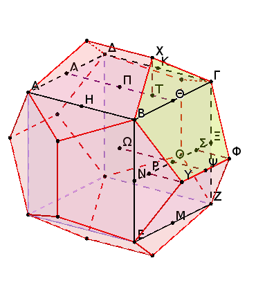
Λέγω δή, ὅτι καὶ ἰσογώνιόν ἐστιν.
Ἐπεὶ γὰρ εὐθεῖα γραμμὴ ἡ ΝΟ ἄκρον καὶ μέσον λόγον τέτμηται κατὰ τὸ Ρ, καὶ τὸ μεῖζον τμῆμά ἐστιν ἡ ΟΡ [ἔστιν ἄρα ὡς συναμφότερος ἡ ΝΟ, ΟΡ πρὸς τὴν ΟΝ, οὕτως ἡ ΝΟ πρὸς τὴν ΟΡ], ἴση δὲ ἡ ΟΡ τῇ ΟΣ [ἔστιν ἄρα ὡς ἡ ΣΝ πρὸς τὴν ΝΟ, οὕτως ἡ ΝΟ πρὸς τὴν ΟΣ], ἡ ΝΣ ἄρα ἄκρον καὶ μέσον λόγον τέτμηται κατὰ τὸ Ο, καὶ τὸ μεῖζον τμῆμά ἐστιν ἡ ΝΟ· τὰ ἄρα ἀπὸ τῶν ΝΣ, ΣΟ τριπλάσιά ἐστι τοῦ ἀπὸ τῆς ΝΟ. ἴση δὲ ἡ μὲν ΝΟ τῇ ΝΒ, ἡ δὲ ΟΣ τῇ ΣΦ· τὰ ἄρα ἀπὸ τῶν ΝΣ, ΣΦ τετράγωνα τριπλάσιά ἐστι τοῦ ἀπὸ τῆς ΝΒ· ὥστε τὰ ἀπὸ τῶν ΦΣ, ΣΝ, ΝΒ τετραπλάσιά ἐστι τοῦ ἀπὸ τῆς ΝΒ. τοῖς δὲ ἀπὸ τῶν ΣΝ, ΝΒ ἴσον ἐστὶ τὸ ἀπὸ τῆς ΣΒ· τὰ ἄρα ἀπὸ τῶν ΒΣ, ΣΦ, τουτέστι τὸ ἀπὸ τῆς ΒΦ [ὀρθὴ γὰρ ἡ ὑπὸ ΦΣΒ γωνία], τετραπλάσιόν ἐστι τοῦ ἀπὸ τῆς ΝΒ· διπλῆ ἄρα ἐστὶν ἡ ΦΒ τῆς ΒΝ. ἔστι δὲ καὶ ἡ ΒΓ τῆς ΒΝ διπλῆ· ἴση ἄρα ἐστὶν ἡ ΒΦ τῇ ΒΓ. καὶ ἐπεὶ δύο αἱ ΒΥ, ΥΦ δυσὶ ταῖς ΒΧ, ΧΓ ἴσαι εἰσίν, καὶ βάσις ἡ ΒΦ βάσει τῇ ΒΓ ἴση, γωνία ἄρα ἡ ὑπὸ ΒΥΦ γωνίᾳ τῇ ὑπὸ ΒΧΓ ἐστιν ἴση.
ὁμοίως δὴ δείξομεν, ὅτι καὶ ἡ ὑπὸ ΥΦΓ γωνία ἴση ἐστὶ τῇ ὑπὸ ΒΧΓ· αἱ ἄρα ὑπὸ ΒΧΓ, ΒΥΦ, ΥΦΓ τρεῖς γωνίαι ἴσαι ἀλλήλαις εἰσίν. ἐὰν δὲ πενταγώνου ἰσοπλεύρου αἱ τρεῖς γωνίαι ἴσαι ἀλλήλαις ὦσιν, ἰσογώνιον ἔσται τὸ πεντάγωνον· ἰσογώνιον ἄρα ἐστὶ τὸ ΒΥΦΓΧ πεντάγωνον. ἐδείχθη δὲ καὶ ἰσόπλευρον· τὸ ἄρα ΒΥΦΓΧ πεντάγωνον ἰσόπλευρόν ἐστι καὶ ἰσογώνιον, καί ἐστιν ἐπὶ μιᾶς τοῦ κύβου πλευρᾶς τῆς ΒΓ. ἐὰν ἄρα ἐφ' ἑκάστης τῶν τοῦ κύβου δώδεκα πλευρῶν τὰ αὐτὰ κατασκευάσωμεν, συσταθήσεταί τι σχῆμα στερεὸν ὑπὸ δώδεκα πενταγώνων ἰσοπλεύρων τε καὶ ἰσογωνίων περιεχόμενον, ὃ καλεῖται δωδεκάεδρον.
Δεῖ δὴ αὐτὸ καὶ σφαίρᾳ περιλαβεῖν τῇ δοθείσῃ καὶ δεῖξαι, ὅτι ἡ τοῦ δωδεκαέδρου πλευρὰ ἄλογός ἐστιν ἡ καλουμένη ἀποτομή.
Ἐκβεβλήσθω γὰρ ἡ ΨΟ, καὶ ἔστω ἡ ΨΩ· συμβάλλει ἄρα ἡ ΟΩ τῇ τοῦ κύβου διαμέτρῳ, καὶ δίχα τέμνουσιν ἀλλήλας· τοῦτο γὰρ δέδεικται ἐν τῷ παρατελεύτῳ θεωρήματι τοῦ ἑνδεκάτου βιβλίου. τεμνέτωσαν κατὰ τὸ Ω· τὸ Ω ἄρα κέντρον ἐστὶ τῆς σφαίρας τῆς περιλαμβανούσης τὸν κύβον, καὶ ἡ ΩΟ ἡμίσεια τῆς πλευρᾶς τοῦ κύβου. ἐπεζεύχθω δὴ ἡ ΥΩ.
καὶ ἐπεὶ εὐθεῖα γραμμὴ ἡ ΝΣ ἄκρον καὶ μέσον λόγον τέτμηται κατὰ τὸ Ο, καὶ τὸ μεῖζον αὐτῆς τμῆμά ἐστιν ἡ ΝΟ, τὰ ἄρα ἀπὸ τῶν ΝΣ, ΣΟ τριπλάσιά ἐστι τοῦ ἀπὸ τῆς ΝΟ. ἴση δὲ ἡ μὲν ΝΣ τῇ ΨΩ, ἐπειδήπερ καὶ ἡ μὲν ΝΟ τῇ ΟΩ ἐστιν ἴση, ἡ δὲ ΨΟ τῇ ΟΣ. ἀλλὰ μὴν καὶ ἡ ΟΣ τῇ ΨΥ, ἐπεὶ καὶ τῇ ΡΟ· τὰ ἄρα ἀπὸ τῶν ΩΨ, ΨΥ τριπλάσιά ἐστι τοῦ ἀπὸ τῆς ΝΟ. τοῖς δὲ ἀπὸ τῶν ΩΨ, ΨΥ ἴσον ἐστὶ τὸ ἀπὸ τῆς ΥΩ· τὸ ἄρα ἀπὸ τῆς ΥΩ τριπλάσιόν ἐστι τοῦ ἀπὸ τῆς ΝΟ. ἔστι δὲ καὶ ἡ ἐκ τοῦ κέντρου τῆς σφαίρας τῆς περιλαμβανούσης τὸν κύβον δυνάμει τριπλασίων τῆς ἡμισείας τῆς τοῦ κύβου πλευρᾶς· προδέδεικται γὰρ κύβον συστήσασθαι καὶ σφαίρᾳ περιλαβεῖν καὶ δεῖξαι, ὅτι ἡ τῆς σφαίρας διάμετρος δυνάμει τριπλασίων ἐστὶ τῆς πλευρᾶς τοῦ κύβου. εἰ δὲ ὅλη τῆς ὅλης, καὶ [ἡ] ἡμίσεια τῆς ἡμισείας· καί ἐστιν ἡ ΝΟ ἡμίσεια τῆς τοῦ κύβου πλευρᾶς· ἡ ἄρα ΥΩ ἴση ἐστὶ τῇ ἐκ τοῦ κέντρου τῆς σφαίρας τῆς περιλαμβανούσης τὸν κύβον. καί ἐστι τὸ Ω κέντρον τῆς σφαίρας τῆς περιλαμβανούσης τὸν κύβον· τὸ Υ ἄρα σημεῖον πρὸς τῇ ἐπιφανείᾳ ἐστὶ τῆς σφαίρας. ὁμοίως δὴ δείξομεν, ὅτι καὶ ἑκάστη τῶν λοιπῶν γωνιῶν τοῦ δωδεκαέδρου πρὸς τῇ ἐπιφανείᾳ ἐστὶ τῆς σφαίρας· περιείληπται ἄρα τὸ δωδεκάεδρον τῇ δοθείσῃ σφαίρᾳ.
Λέγω δή, ὅτι ἡ τοῦ δωδεκαέδρου πλευρὰ ἄλογός ἐστιν ἡ καλουμένη ἀποτομή.
Ἐπεὶ γὰρ τῆς ΝΟ ἄκρον καὶ μέσον λόγον τετμημένης τὸ μεῖζον τμῆμά ἐστιν ἡ ΡΟ, τῆς δὲ ΟΞ ἄκρον καὶ μέσον λόγον τετμημένης τὸ μεῖζον τμῆμά ἐστιν ἡ ΟΣ, ὅλης ἄρα τῆς ΝΞ ἄκρον καὶ μέσον λόγον τεμνομένης τὸ μεῖζον τμῆμά ἐστιν ἡ ΡΣ. οἷον ἐπεί ἐστιν ὡς ἡ ΝΟ πρὸς τὴν ΟΡ, ἡ ΟΡ πρὸς τὴν ΡΝ, καὶ τὰ διπλάσια· τὰ γὰρ μέρη τοῖς ἰσάκις πολλαπλασίοις τὸν αὐτὸν ἔχει λόγον· ὡς ἄρα ἡ ΝΞ πρὸς τὴν ΡΣ, οὕτως ἡ ΡΣ πρὸς συναμφότερον τὴν ΝΡ, ΣΞ. μείζων δὲ ἡ ΝΞ τῆς ΡΣ· μείζων ἄρα καὶ ἡ ΡΣ συναμφοτέρου τῆς ΝΡ, ΣΞ· ἡ ΝΞ ἄρα ἄκρον καὶ μέσον λόγον τέτμηται, καὶ τὸ μεῖζον αὐτῆς τμῆμά ἐστιν ἡ ΡΣ. ἴση δὲ ἡ ΡΣ τῇ ΥΦ· τῆς ἄρα ΝΞ ἄκρον καὶ μέσον λόγον τεμνομένης τὸ μεῖζον τμῆμά ἐστιν ἡ ΥΦ. καὶ ἐπεὶ ῥητή ἐστιν ἡ τῆς σφαίρας διάμετρος καί ἐστι δυνάμει τριπλασίων τῆς τοῦ κύβου πλευρᾶς, ῥητὴ ἄρα ἐστὶν ἡ ΝΞ πλευρὰ οὖσα τοῦ κύβου. ἐὰν δὲ ῥητὴ γραμμὴ ἄκρον καὶ μέσον λόγον τμηθῇ, ἑκάτερον τῶν τμημάτων ἄλογός ἐστιν ἀποτομή.
Ἡ ΥΦ ἄρα πλευρὰ οὖσα τοῦ δωδεκαέδρου ἄλογός ἐστιν ἀποτομή.
ΠόρισμαἘκ δὴ τούτου φανερόν, ὅτι τῆς τοῦ κύβου πλευρᾶς ἄκρον καὶ μέσον λόγον τεμνομένης τὸ μεῖζον τμῆμά ἐστιν ἡ τοῦ δωδεκαέδρου πλευρά. ὅπερ ἔδει δεῖξαι.
Τὰς πλευρὰς τῶν πέντε σχημάτων ἐκθέσθαι καὶ συγκρῖναι πρὸς ἀλλήλας.
Ἐκκείσθω ἡ τῆς δοθείσης σφαίρας διάμετρος ἡ ΑΒ, καὶ τετμήσθω κατὰ τὸ Γ ὥστε ἴσην εἶναι τὴν ΑΓ τῇ ΓΒ, κατὰ δὲ τὸ Δ ὥστε διπλασίονα εἶναι τὴν ΑΔ τῆς ΔΒ, καὶ γεγράφθω ἐπὶ τῆς ΑΒ ἡμικύκλιον τὸ ΑΕΒ, καὶ ἀπὸ τῶν Γ, Δ τῇ ΑΒ πρὸς ὀρθὰς ἤχθωσαν αἱ ΓΕ, ΔΖ, καὶ ἐπεζεύχθωσαν αἱ ΑΖ, ΖΒ, ΕΒ.
καὶ ἐπεὶ διπλῆ ἐστιν ἡ ΑΔ τῆς ΔΒ, τριπλῆ ἄρα ἐστὶν ἡ ΑΒ τῆς ΒΔ. ἀναστρέψαντι ἡμιολία ἄρα ἐστὶν ἡ ΒΑ τῆς ΑΔ. ὡς δὲ ἡ ΒΑ πρὸς τὴν ΑΔ, οὕτως τὸ ἀπὸ τῆς ΒΑ πρὸς τὸ ἀπὸ τῆς ΑΖ· ἰσογώνιον γάρ ἐστι τὸ ΑΖΒ τρίγωνον τῷ ΑΖΔ τριγώνῳ· ἡμιόλιον ἄρα ἐστὶ τὸ ἀπὸ τῆς ΒΑ τοῦ ἀπὸ τῆς ΑΖ. ἔστι δὲ καὶ ἡ τῆς σφαίρας διάμετρος δυνάμει ἡμιολία τῆς πλευρᾶς τῆς πυραμίδος. καί ἐστιν ἡ ΑΒ ἡ τῆς σφαίρας διάμετρος· ἡ ΑΖ ἄρα ἴση ἐστὶ τῇ πλευρᾷ τῆς πυραμίδος.
Πάλιν, ἐπεὶ διπλασίων ἐστὶν ἡ ΑΔ τῆς ΔΒ, τριπλῆ ἄρα ἐστὶν ἡ ΑΒ τῆς ΒΔ. ὡς δὲ ἡ ΑΒ πρὸς τὴν ΒΔ, οὕτως τὸ ἀπὸ τῆς ΑΒ πρὸς τὸ ἀπὸ τῆς ΒΖ· τριπλάσιον ἄρα ἐστὶ τὸ ἀπὸ τῆς ΑΒ τοῦ ἀπὸ τῆς ΒΖ. ἔστι δὲ καὶ ἡ τῆς σφαίρας διάμετρος δυνάμει τριπλασίων τῆς τοῦ κύβου πλευρᾶς. καί ἐστιν ἡ ΑΒ ἡ τῆς σφαίρας διάμετρος· ἡ ΒΖ ἄρα τοῦ κύβου ἐστὶ πλευρά.
Καὶ ἐπεὶ ἴση ἐστὶν ἡ ΑΓ τῇ ΓΒ, διπλῆ ἄρα ἐστὶν ἡ ΑΒ τῆς ΒΓ. ὡς δὲ ἡ ΑΒ πρὸς τὴν ΒΓ, οὕτως τὸ ἀπὸ τῆς ΑΒ πρὸς τὸ ἀπὸ τῆς ΒΕ· διπλάσιον ἄρα ἐστὶ τὸ ἀπὸ τῆς ΑΒ τοῦ ἀπὸ τῆς ΒΕ. ἔστι δὲ καὶ ἡ τῆς σφαίρας διάμετρος δυνάμει διπλασίων τῆς τοῦ ὀκταέδρου πλευρᾶς. καί ἐστιν ἡ ΑΒ ἡ τῆς δοθείσης σφαίρας διάμετρος· ἡ ΒΕ ἄρα τοῦ ὀκταέδρου ἐστὶ πλευρά.
Ἤχθω δὴ ἀπὸ τοῦ Α σημείου τῇ ΑΒ εὐθείᾳ πρὸς ὀρθὰς ἡ ΑΗ, καὶ κείσθω ἡ ΑΗ ἴση τῇ ΑΒ, καὶ ἐπεζεύχθω ἡ ΗΓ, καὶ ἀπὸ τοῦ Θ ἐπὶ τὴν ΑΒ κάθετος ἤχθω ἡ ΘΚ.
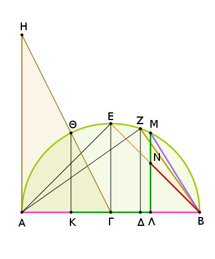
καὶ ἐπεὶ διπλῆ ἐστιν ἡ ΗΑ τῆς ΑΓ· ἴση γὰρ ἡ ΗΑ τῇ ΑΒ· ὡς δὲ ἡ ΗΑ πρὸς τὴν ΑΓ, οὕτως ἡ ΘΚ πρὸς τὴν ΚΓ, διπλῆ ἄρα καὶ ἡ ΘΚ τῆς ΚΓ. τετραπλάσιον ἄρα ἐστὶ τὸ ἀπὸ τῆς ΘΚ τοῦ ἀπὸ τῆς ΚΓ· τὰ ἄρα ἀπὸ τῶν ΘΚ, ΚΓ, ὅπερ ἐστὶ τὸ ἀπὸ τῆς ΘΓ, πενταπλάσιόν ἐστι τοῦ ἀπὸ τῆς ΚΓ. ἴση δὲ ἡ ΘΓ τῇ ΓΒ· πενταπλάσιον ἄρα ἐστὶ τὸ ἀπὸ τῆς ΒΓ τοῦ ἀπὸ τῆς ΓΚ. καὶ ἐπεὶ διπλῆ ἐστιν ἡ ΑΒ τῆς ΓΒ, ὧν ἡ ΑΔ τῆς ΔΒ ἐστι διπλῆ, λοιπὴ ἄρα ἡ ΒΔ λοιπῆς τῆς ΔΓ ἐστι διπλῆ. τριπλῆ ἄρα ἡ ΒΓ τῆς ΓΔ· ἐνναπλάσιον ἄρα τὸ ἀπὸ τῆς ΒΓ τοῦ ἀπὸ τῆς ΓΔ. πενταπλάσιον δὲ τὸ ἀπὸ τῆς ΒΓ τοῦ ἀπὸ τῆς ΓΚ· μεῖζον ἄρα τὸ ἀπὸ τῆς ΓΚ τοῦ ἀπὸ τῆς ΓΔ. μείζων ἄρα ἐστὶν ἡ ΓΚ τῆς ΓΔ.
κείσθω τῇ ΓΚ ἴση ἡ ΓΛ, καὶ ἀπὸ τοῦ Λ τῇ ΑΒ πρὸς ὀρθὰς ἤχθω ἡ ΛΜ, καὶ ἐπεζεύχθω ἡ ΜΒ.
καὶ ἐπεὶ πενταπλάσιόν ἐστι τὸ ἀπὸ τῆς ΒΓ τοῦ ἀπὸ τῆς ΓΚ, καί ἐστι τῆς μὲν ΒΓ διπλῆ ἡ ΑΒ, τῆς δὲ ΓΚ διπλῆ ἡ ΚΛ, πενταπλάσιον ἄρα ἐστὶ τὸ ἀπὸ τῆς ΑΒ τοῦ ἀπὸ τῆς ΚΛ. ἔστι δὲ καὶ ἡ τῆς σφαίρας διάμετρος δυνάμει πενταπλασίων τῆς ἐκ τοῦ κέντρου τοῦ κύκλου, ἀφ' οὗ τὸ εἰκοσάεδρον ἀναγέγραπται. καί ἐστιν ἡ ΑΒ ἡ τῆς σφαίρας διάμετρος· ἡ ΚΛ ἄρα ἐκ τοῦ κέντρου ἐστὶ τοῦ κύκλου, ἀφ' οὗ τὸ εἰκοσάεδρον ἀναγέγραπται· ἡ ΚΛ ἄρα ἑξαγώνου ἐστὶ πλευρὰ τοῦ εἰρημένου κύκλου.
καὶ ἐπεὶ ἡ τῆς σφαίρας διάμετρος σύγκειται ἔκ τε τῆς τοῦ ἑξαγώνου καὶ δύο τῶν τοῦ δεκαγώνου τῶν εἰς τὸν εἰρημένον κύκλον ἐγγραφομένων, καί ἐστιν ἡ μὲν ΑΒ ἡ τῆς σφαίρας διάμετρος, ἡ δὲ ΚΛ ἑξαγώνου πλευρά, καὶ ἴση ἡ ΑΚ τῇ ΛΒ, ἑκατέρα ἄρα τῶν ΑΚ, ΛΒ δεκαγώνου ἐστὶ πλευρὰ τοῦ ἐγγραφομένου εἰς τὸν κύκλον, ἀφ' οὗ τὸ εἰκοσάεδρον ἀναγέγραπται. καὶ ἐπεὶ δεκαγώνου μὲν ἡ ΛΒ, ἑξαγώνου δὲ ἡ ΜΛ· ἴση γάρ ἐστι τῇ ΚΛ, ἐπεὶ καὶ τῇ ΘΚ· ἴσον γὰρ ἀπέχουσιν ἀπὸ τοῦ κέντρου· καί ἐστιν ἑκατέρα τῶν ΘΚ, ΚΛ διπλασίων τῆς ΚΓ· πενταγώνου ἄρα ἐστὶν ἡ ΜΒ. ἡ δὲ τοῦ πενταγώνου ἐστὶν ἡ τοῦ εἰκοσαέδρου· εἰκοσαέδρου ἄρα ἐστὶν ἡ ΜΒ. Καὶ ἐπεὶ ἡ ΖΒ κύβου ἐστὶ πλευρά, τετμήσθω ἄκρον καὶ μέσον λόγον κατὰ τὸ Ν, καὶ ἔστω μεῖζον τμῆμα τὸ ΝΒ· ἡ ΝΒ ἄρα δωδεκαέδρου ἐστὶ πλευρά.
Καὶ ἐπεὶ ἡ τῆς σφαίρας διάμετρος ἐδείχθη τῆς μὲν ΑΖ πλευρᾶς τῆς πυραμίδος δυνάμει ἡμιολία, τῆς δὲ τοῦ ὀκταέδρου τῆς ΒΕ δυνάμει διπλασίων, τῆς δὲ τοῦ κύβου τῆς ΖΒ δυνάμει τριπλασίων, οἵων ἄρα ἡ τῆς σφαίρας διάμετρος δυνάμει ἕξ, τοιούτων ἡ μὲν τῆς πυραμίδος τεσσάρων, ἡ δὲ τοῦ ὀκταέδρου τριῶν, ἡ δὲ τοῦ κύβου δύο.
ἡ μὲν ἄρα τῆς πυραμίδος πλευρὰ τῆς μὲν τοῦ ὀκταέδρου πλευρᾶς δυνάμει ἐστὶν ἐπίτριτος, τῆς δὲ τοῦ κύβου δυνάμει διπλῆ, ἡ δὲ τοῦ ὀκταέδρου τῆς τοῦ κύβου δυνάμει ἡμιολία. αἱ μὲν οὖν εἰρημέναι τῶν τριῶν σχημάτων πλευραί, λέγω δὴ πυραμίδος καὶ ὀκταέδρου καὶ κύβου, πρὸς ἀλλήλας εἰσὶν ἐν λόγοις ῥητοῖς. αἱ δὲ λοιπαὶ δύο, λέγω δὴ ἥ τε τοῦ εἰκοσαέδρου καὶ ἡ τοῦ δωδεκαέδρου, οὔτε πρὸς ἀλλήλας οὔτε πρὸς τὰς προειρημένας εἰσὶν ἐν λόγοις ῥητοῖς· ἄλογοι γάρ εἰσιν, ἡ μὲν ἐλάττων, ἡ δὲ ἀποτομή.
Ὅτι μείζων ἐστὶν ἡ τοῦ εἰκοσαέδρου πλευρὰ ἡ ΜΒ τῆς τοῦ δωδεκαέδρου τῆς ΝΒ, δείξομεν οὕτως.
Ἐπεὶ γὰρ ἰσογώνιόν ἐστι τὸ ΖΔΒ τρίγωνον τῷ ΖΑΒ τριγώνῳ, ἀνάλογόν ἐστιν ὡς ἡ ΔΒ πρὸς τὴν ΒΖ, οὕτως ἡ ΒΖ πρὸς τὴν ΒΑ. καὶ ἐπεὶ τρεῖς εὐθεῖαι ἀνάλογόν εἰσιν, ἔστιν ὡς ἡ πρώτη πρὸς τὴν τρίτην, οὕτως τὸ ἀπὸ τῆς πρώτης πρὸς τὸ ἀπὸ τῆς δευτέρας· ἔστιν ἄρα ὡς ἡ ΔΒ πρὸς τὴν ΒΑ, οὕτως τὸ ἀπὸ τῆς ΔΒ πρὸς τὸ ἀπὸ τῆς ΒΖ· ἀνάπαλιν ἄρα ὡς ἡ ΑΒ πρὸς τὴν ΒΔ, οὕτως τὸ ἀπὸ τῆς ΖΒ πρὸς τὸ ἀπὸ τῆς ΒΔ. τριπλῆ δὲ ἡ ΑΒ τῆς ΒΔ· τριπλάσιον ἄρα τὸ ἀπὸ τῆς ΖΒ τοῦ ἀπὸ τῆς ΒΔ.
ἔστι δὲ καὶ τὸ ἀπὸ τῆς ΑΔ τοῦ ἀπὸ τῆς ΔΒ τετραπλάσιον· διπλῆ γὰρ ἡ ΑΔ τῆς ΔΒ· μεῖζον ἄρα τὸ ἀπὸ τῆς ΑΔ τοῦ ἀπὸ τῆς ΖΒ· μείζων ἄρα ἡ ΑΔ τῆς ΖΒ· πολλῷ ἄρα ἡ ΑΛ τῆς ΖΒ μείζων ἐστίν. καὶ τῆς μὲν ΑΛ ἄκρον καὶ μέσον λόγον τεμνομένης τὸ μεῖζον τμῆμά ἐστιν ἡ ΚΛ, ἐπειδήπερ ἡ μὲν ΛΚ ἑξαγώνου ἐστίν, ἡ δὲ ΚΑ δεκαγώνου· τῆς δὲ ΖΒ ἄκρον καὶ μέσον λόγον τεμνομένης τὸ μεῖζον τμῆμά ἐστιν ἡ ΝΒ· μείζων ἄρα ἡ ΚΛ τῆς ΝΒ. ἴση δὲ ἡ ΚΛ τῇ ΛΜ·μείζων ἄρα ἡ ΛΜ τῆς ΝΒ [τῆς δὲ ΛΜ μείζων ἐστὶν ἡ ΜΒ]. πολλῷ ἄρα ἡ ΜΒ πλευρὰ οὖσα τοῦ εἰκοσαέδρου μείζων ἐστὶ τῆς ΝΒ πλευρᾶς οὔσης τοῦ δωδεκαέδρου· ὅπερ ἔδει δεῖξαι.
Λέγω δή, ὅτι παρὰ τὰ εἰρημένα πέντε σχήματα οὐ συσταθήσεται ἕτερον σχῆμα περιεχόμενον ὑπὸ ἰσοπλεύρων τε καὶ ἰσογωνίων ἴσων ἀλλήλοις.
Ὑπὸ μὲν γὰρ δύο τριγώνων ἢ ὅλως ἐπιπέδων στερεὰ γωνία οὐ συνίσταται. ὑπὸ δὲ τριῶν τριγώνων ἡ τῆς πυραμίδος, ὑπὸ δὲ τεσσάρων ἡ τοῦ ὀκταέδρου, ὑπὸ δὲ πέντε ἡ τοῦ εἰκοσαέδρου· ὑπὸ δὲ ἓξ τριγώνων ἰσοπλεύρων τε καὶ ἰσογωνίων πρὸς ἑνὶ σημείῳ συνισταμένων οὐκ ἔσται στερεὰ γωνία· οὔσης γὰρ τῆς τοῦ ἰσοπλεύρου τριγώνου γωνίας διμοίρου ὀρθῆς ἔσονται αἱ ἓξ τέσσαρσιν ὀρθαῖς ἴσαι· ὅπερ ἀδύνατον· ἅπασα γὰρ στερεὰ γωνία ὑπὸ ἐλασσόνων ἢ τεσσάρων ὀρθῶν περιέχεται. διὰ τὰ αὐτὰ δὴ οὐδὲ ὑπὸ πλειόνων ἢ ἓξ γωνιῶν ἐπιπέδων στερεὰ γωνία συνίσταται. ὑπὸ δὲ τετραγώνων τριῶν ἡ τοῦ κύβου γωνία περιέχεται· ὑπὸ δὲ τεσσάρων ἀδύνατον· ἔσονται γὰρ πάλιν τέσσαρες ὀρθαί. ὑπὸ δὲ πενταγώνων ἰσοπλεύρων καὶ ἰσογωνίων, ὑπὸ μὲν τριῶν ἡ τοῦ δωδεκαέδρου· ὑπὸ δὲ τεσσάρων ἀδύνατον· οὔσης γὰρ τῆς τοῦ πενταγώνου ἰσοπλεύρου γωνίας ὀρθῆς καὶ πέμπτου, ἔσονται αἱ τέσσαρες γωνίαι τεσσάρων ὀρθῶν μείζους· ὅπερ ἀδύνατον. οὐδὲ μὴν ὑπὸ πολυγώνων ἑτέρων σχημάτων περισχεθήσεται στερεὰ γωνία διὰ τὸ αὐτὸ ἄτοπον.
Οὐκ ἄρα παρὰ τὰ εἰρημένα πέντε σχήματα ἕτερον σχῆμα στερεὸν συσταθήσεται ὑπὸ ἰσοπλεύρων τε καὶ ἰσογωνίων περιεχόμενον· ὅπερ ἔδει δεῖξαι.
Λ ῆ μ μ α : Ὅτι δὲ ἡ τοῦ ἰσοπλεύρου καὶ ἰσογωνίου πενταγώνου γωνία ὀρθή ἐστι καὶ πέμπτου, οὕτω δεικτέον.
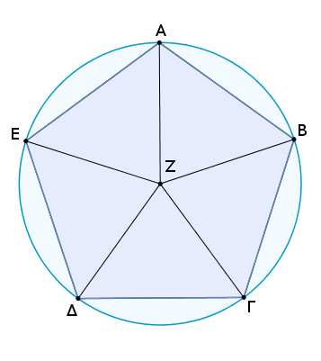
Ἔστω γὰρ πεντάγωνον ἰσόπλευρον καὶ ἰσογώνιον τὸ ΑΒΓΔΕ, καὶ περιγεγράφθω περὶ αὐτὸ κύκλος ὁ ΑΒΓ ΔΕ, καὶ εἰλήφθω αὐτοῦ τὸ κέντρον τὸ Ζ, καὶ ἐπεζεύχθωσαν αἱ ΖΑ, ΖΒ, ΖΓ, ΖΔ, ΖΕ. δίχα ἄρα τέμνουσι τὰς πρὸς τοῖς Α, Β, Γ, Δ, Ε τοῦ πενταγώνου γωνίας.
καὶ ἐπεὶ αἱ πρὸς τῷ Ζ πέντε γωνίαι τέσσαρσιν ὀρθαῖς ἴσαι εἰσὶ καί εἰσιν ἴσαι, μία ἄρα αὐτῶν, ὡς ἡ ὑπὸ ΑΖΒ, μιᾶς ὀρθῆς ἐστι παρὰ πέμπτον· λοιπαὶ ἄρα αἱ ὑπὸ ΖΑΒ, ΑΒΖ μιᾶς εἰσιν ὀρθῆς καὶ πέμπτου. ἴση δὲ ἡ ὑπὸ ΖΑΒ τῇ ὑπὸ ΖΒΓ· καὶ ὅλη ἄρα ἡ ὑπὸ ΑΒΓ τοῦ πενταγώνου γωνία μιᾶς ἐστιν ὀρθῆς καὶ πέμπτου· ὅπερ ἔδει δεῖξαι.